← 回股市觀察
盤中觀察 每日盤中觀察
2026/11/25 12:31 即時快照 · 當日盤中成交金額前 50 檔（上市 35＋上櫃 15）· 公開資料整理
→ 看當日逐檔技術線型分析（全檔） 歷次逐檔分析
38,127.29
加權指數 -1,995.06 點（-4.97%）
31 / 471
上漲／下跌檔數（候選池共 505 檔：上漲 31、下跌 471、平盤 3；此為候選池，非全市場）
這是盤中快照，不是收盤結果。資料時間 2026-11-25 12:31:26（TWSE MIS 即時行情，上市／上櫃皆 delay=0）。
13:30 收盤（含最後一盤集合競價）會再變動；量能是以「已過交易時間比例」推估（尾盤大量時會低估）；
技術面標籤是把盤中現價代入原本以收盤價設計的規則（日線歷史只到前一交易日 9/14）。
統計範圍：候選池＝20261124 與 20261123 收盤成交值前段（上市 250／上櫃 130）取聯集，共 505 檔；再以今日盤中累計成交金額排序取
上市前 35＋上櫃前 15。漲跌家數是候選池內的數字，不是全市場（即時全市場家數證交所沒有開放端點）。
本頁為公開資料的整理與觀察，不構成投資建議，不報牌、不預測、不下買賣決策。
時程紀錄（本日盤中分析）▾ 點擊展開▴ 點擊收合
| 階段 | 時間 |
|---|
| 任務開始 | 由排程自動觸發（週一～週五 12:30） |
| 分析腳本執行 | 12:30:24 → 12:31:26（61.9 秒） |
| 資料快照時間 | 2026-11-25 12:31:26（行情時間戳 12:31:17） |
| 本頁產出 | 見頁尾版本時間 |
逐階段 log：
| 12:30:24 | START 盤中分析開始 |
| 12:30:24 | ① 抓即時指數（tse_t00 / otc_o00） |
| 12:30:25 | ② 建立候選池（20261124 與 20261123 成交值前段，上市＋上櫃） |
| 12:30:25 | 候選池共 505 檔 |
| 12:30:25 | ③ 抓即時候選池行情 |
| 12:31:24 | 取得即時報價 505 檔 |
| 12:31:24 | 候選池漲跌：漲 31／跌 471／平盤 3（快照時間 12:31:17） |
| 12:31:24 | ④ 選出 70 檔（上市 50＋上櫃 20），門檻 15.11 億 |
| 12:31:24 | ⑤ 抓日線歷史並算技術面 |
| 12:31:26 | ⑥ 產出（70 檔） |
K 線圖怎麼看：每一檔都附 K 線圖 —— 黃圈是轉折低點、粉圈是轉折高點（
虛線圈代表還沒確認的轉折）、藍線是月線（20 日均線）；頸線取最近兩個轉折低點之間的最高轉折高點，
突破頸線才會標示。
圖上另有兩條水平虛線、左側標數值：高點頸線（紅，最近兩個轉折低點之間的最高轉折高點）與低點頸線（綠，最近兩個轉折高點之間的最低轉折低點）；樣本不足就不畫。
紅色 K 棒＝收盤高於開盤、綠色＝收盤低於開盤。
大盤趨勢快篩（加權指數）（盤中近似） 資料日 2026/11/24・來源：證交所公開資料
主狀態：跌破月線
前一交易日對照（11/23）：跌破頸線（M 頭成立）（量比 20 1.14） → 今日跌破月線（量比 20 0.46）
指標、數值、判定（點開看 12 項明細：均線位置／排列、月線方向、頸線、轉折結構、位階、量價…）
加權指數11/24 收盤漲 3,310.46 點（+8.99%），收 40,122.35、跌破月線 41,959.40；月線還在下彎，MA10 這條短均還沒收復，離高點頸線 47,615.17 還差 15.74%。
- 均線位置：4 條均線站上 1 條；沒站上的是 MA10 40,374.57（收盤比它低 0.62%）、MA20 41,959.40（收盤比它低 4.38%）、MA60 45,494.29（收盤比它低 11.81%）
- 月線方向：月線 MA20 現在 41,959.40，比 5 個交易日前低 2,027.56 點 → 下彎
- 量能：集中市場成交 4,325.6 億，比 5 日均量少很多（0.48 倍）、比 20 日均量少很多（0.46 倍）
- 關鍵價位：高點頸線 47,615.17，還差 15.74%；低點頸線 38,610.95，還在下方 3.91%
- 大小型股：加權 +8.99%、櫃買 +8.24%，兩邊同向
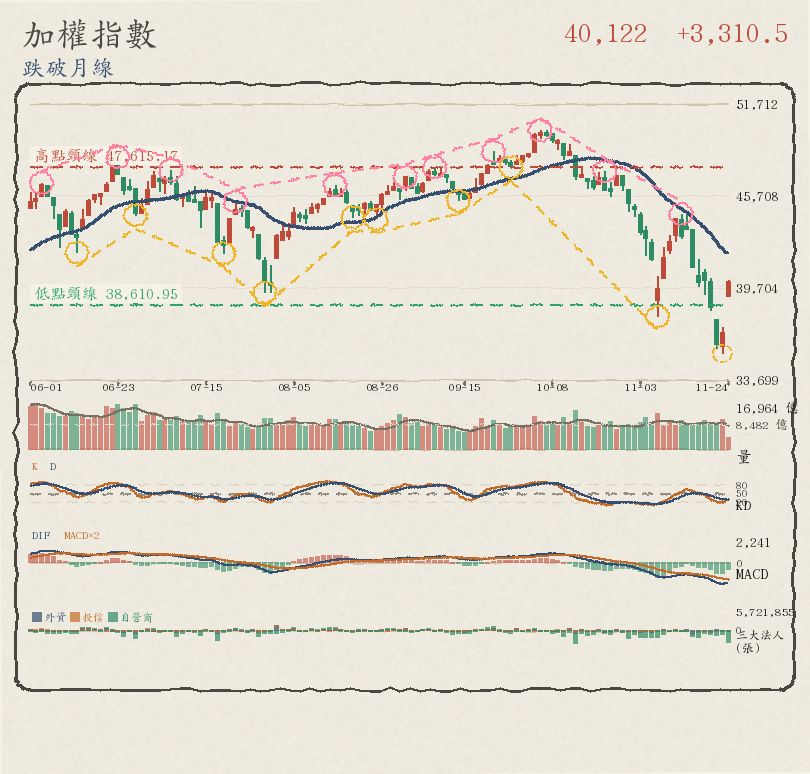
圖說：加權指數日 K（與個股圖相同標記）：黃圈＝轉折低點、粉圈＝轉折高點、虛線小圈＝還沒確認的轉折、藍線＝月線 MA20、水平虛線＝高點／低點頸線。最後一根是資料日當天。
本區塊為公開資料的技術面觀察，不構成投資建議，
不報牌、不預測、不下買賣決策。成交金額為集中市場總成交金額（含 ETF／權證），
與頁首摘要的「上市個股成交金額」口徑不同。標籤是統計，不是評分、也不是推薦。
上市 vs 上櫃（同期快篩）
加權 +8.99% vs 櫃買 +8.24%（同向） → 同向
（兩個市場分開寫，不合併成一個數字；櫃買為 TPEX 公開資料）
櫃買歷史：TPEX 逐日回補 130 根；來源：櫃買中心 www/zh-tw/indexInfo/sectinx（逐日，官方；OpenAPI tpex_index 只回當月）
（TPEX OpenAPI 只回當月，故逐日回補；歷史不足就不算該條均線並標「資料不足」，不用錯數字）
近 20 個交易日大盤狀態回溯（最新在上）（點開看逐日主狀態／量比／量價象限）
用同一支程式回算最近 20 個交易日（主狀態 S1~S8 與量比 20 皆為當日收盤當時的判定，
不是事後調整）；量比 20 未公布的日子寫「—」。
好條件最多的（前 10）
不好條件最多的（前 10）
好條件（7 項）：站上月線、月線向上、底底高、頭頭高、突破頸線、攻擊量（量增＋上漲）、守住今日高檔（距今日高點 1% 內）。
不好條件（7 項）：跌破前低、今日下跌、相對大盤弱、在月線之下、貼近今日低點（1% 內）、跌破昨日低點、月線下彎。
兩邊都是同一組日線資料＋盤中即時價算出來的「符合項目數」，只是把方向相反的條件分開數；
條件數不是評分或推薦，不構成投資建議。
逆勢上漲（加權下跌、個股上漲）（10 上市 9／上櫃 1）
盤中爆量（估量比 ≥ 1.5）（34 上市 28／上櫃 6）
跌破前低（線型轉弱）（44 上市 31／上櫃 13）
今日疲弱（跌幅前 10）（10 上市 6／上櫃 4）
逐檔（70 檔，依盤中成交金額排序）
台積電 2330 上市
2145 -85.0（-3.81%）
區間或轉弱 盤中成交值 1297.08 億・全榜第 1 名（上市第 1 名）・相對大盤 +1.16
好條件 0/7：無
不好條件 4/7：今日下跌、在月線之下、跌破昨日低點、月線下彎
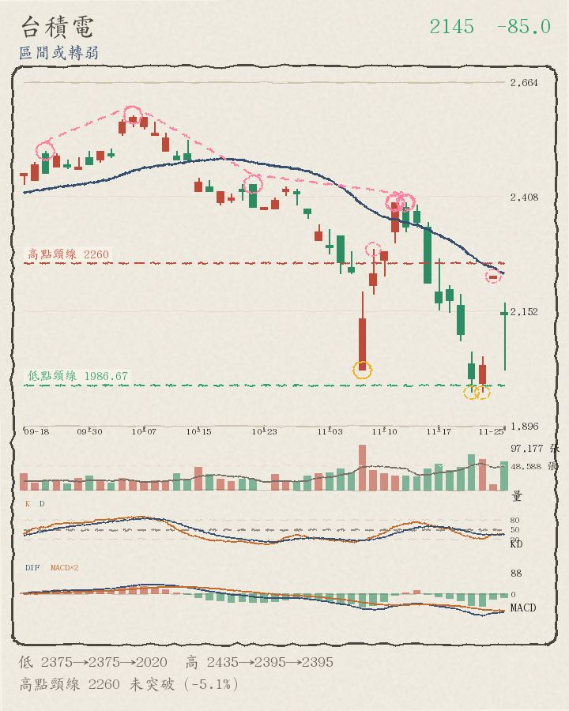
12:31 盤中 2145（-3.81%），比加權指數強 1.16 個百分點、跌破月線 2249.75，離高點頸線 2260 還差 5.1%，轉折還沒走出明顯方向。
- 月線位置：現價 2145 在月線 2249.75 之下（-4.7%）；5 日線 2107 也在月線之下（短均在下）；月線向下
- 量能：以已過交易時間推估，今天成交量約是 20 日均量的 1.82 倍（爆量），比 20 日均量大不少；下跌卻量增，量價背離
- 關鍵價位：高點頸線 2260 還沒突破，差 5.1%；前一交易日高點 2230（低於 3.8%）；今天盤中高點 2170（低於 1.2%）；今天盤中低點 2020（高於 6.2%）
- 轉折結構：低點 2375、2375、2020 與高點 2435、2395、2395 都沒有明顯遞增，屬於區間震盪或轉弱；還沒確認的轉折低點 11-20 1970、11-23 1970；還沒確認的轉折高點 11-12 2395、11-24 2230（圖上虛線小圈）
聯發科 2454 上市
3645 -405.0（-10.00%）
區間或轉弱 盤中成交值 775.29 億・全榜第 2 名（上市第 2 名）・相對大盤 -5.03
好條件 0/7：無
不好條件 5/7：今日下跌、相對大盤弱、在月線之下、跌破昨日低點、月線下彎
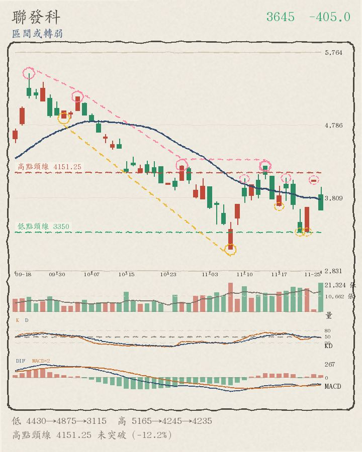
12:31 盤中 3645（-10.00%），比加權指數弱 5.03 個百分點、跌破月線 3815，離高點頸線 4151.25 還差 12.2%，轉折還沒走出明顯方向。
- 月線位置：現價 3645 在月線 3815 之下（-4.5%）；5 日線 3749 也在月線之下（短均在下）；月線向下
- 量能：以已過交易時間推估，今天成交量約是 20 日均量的 2.07 倍（爆量），比 20 日均量大不少；下跌卻量增，量價背離
- 關鍵價位：高點頸線 4151.25 還沒突破，差 12.2%；前一交易日高點 4050（低於 10.0%）；今天盤中高點 3955（低於 7.8%）；今天盤中低點 3645（高於 0.0%）
- 轉折結構：低點 4430、4875、3115 與高點 5165、4245、4235 都沒有明顯遞增，屬於區間震盪或轉弱；還沒確認的轉折低點 11-20 3350、11-23 3350；還沒確認的轉折高點 11-18 4075、11-24 4050（圖上虛線小圈）
台達電 2308 上市
1055 -30.0（-2.76%）
區間或轉弱 盤中成交值 357.66 億・全榜第 3 名（上市第 3 名）・相對大盤 +2.21
好條件 0/7：無
不好條件 4/7：今日下跌、在月線之下、跌破昨日低點、月線下彎
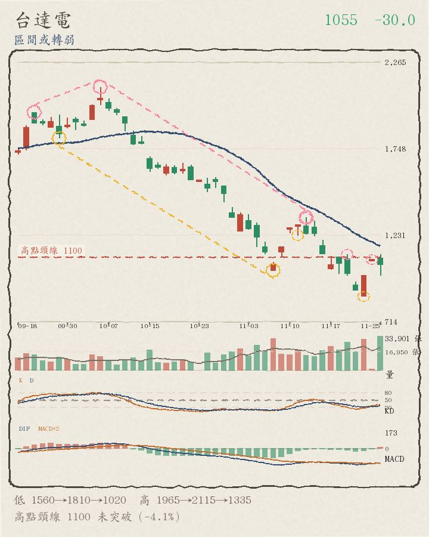
12:31 盤中 1055（-2.76%），比加權指數強 2.21 個百分點、跌破月線 1190.75，離高點頸線 1100 還差 4.1%，轉折還沒走出明顯方向。
- 月線位置：現價 1055 在月線 1190.75 之下（-11.4%）；5 日線 1007 也在月線之下（短均在下）；月線向下
- 量能：以已過交易時間推估，今天成交量約是 20 日均量的 2.25 倍（爆量），比 20 日均量大不少；下跌卻量增，量價背離
- 關鍵價位：高點頸線 1100 還沒突破，差 4.1%；前一交易日高點 1085（低於 2.8%）；今天盤中高點 1115（低於 5.4%）；今天盤中低點 989（高於 6.7%）
- 轉折結構：低點 1560、1810、1020 與高點 1965、2115、1335 都沒有明顯遞增，屬於區間震盪或轉弱；還沒確認的轉折低點 11-11 1230、11-23 864；還沒確認的轉折高點 11-19 1115、11-24 1085（圖上虛線小圈）
南亞 1303 上市
230.5 -18.5（-7.43%）
區間或轉弱 盤中成交值 266.99 億・全榜第 4 名（上市第 4 名）・相對大盤 -2.46
好條件 0/7：無
不好條件 5/7：今日下跌、相對大盤弱、在月線之下、跌破昨日低點、月線下彎
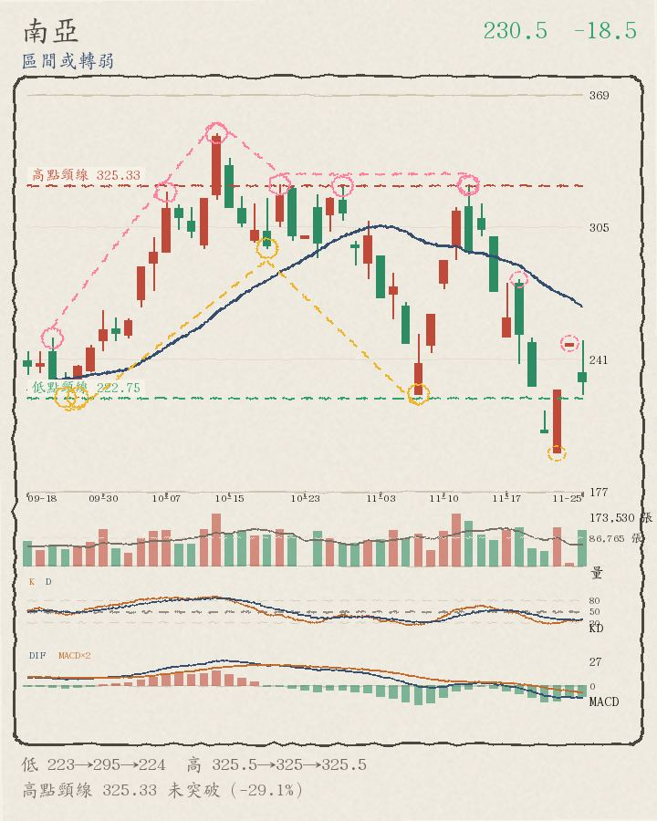
12:31 盤中 230.5（-7.43%），比加權指數弱 2.46 個百分點、跌破月線 271.25，離高點頸線 325.33 還差 29.1%，轉折還沒走出明顯方向。
- 月線位置：現價 230.5 在月線 271.25 之下（-15.0%）；5 日線 232.7 也在月線之下（短均在下）；月線向下
- 量能：以已過交易時間推估，今天成交量約是 20 日均量的 1.49 倍（量增），比 20 日均量大不少；下跌卻量增，量價背離
- 關鍵價位：高點頸線 325.33 還沒突破，差 29.1%；前一交易日高點 249（低於 7.4%）；今天盤中高點 250.5（低於 8.0%）；今天盤中低點 224.5（高於 2.7%）
- 轉折結構：低點 223、295、224.5 與高點 325.5、325、325.5 都沒有明顯遞增，屬於區間震盪或轉弱；還沒確認的轉折低點 11-23 196；還沒確認的轉折高點 11-18 280、11-24 249（圖上虛線小圈）
量增
↑ 回上方清單
台光電 2383 上市
3360 -35.0（-1.03%）
區間或轉弱 盤中成交值 246.02 億・全榜第 5 名（上市第 5 名）・相對大盤 +3.94
好條件 0/7：無
不好條件 5/7：跌破前低、今日下跌、在月線之下、跌破昨日低點、月線下彎
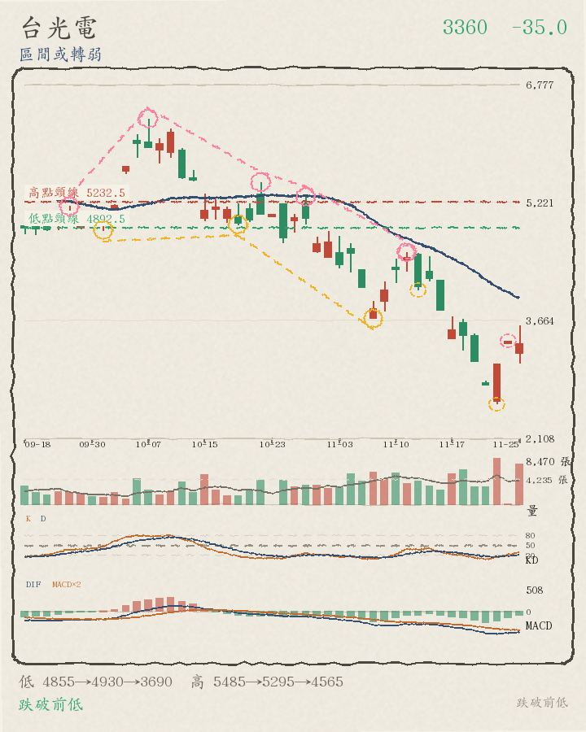
12:31 盤中 3360（-1.03%），比加權指數強 3.94 個百分點、跌破月線 4037.75，離高點頸線 5232.5 還差 35.8%，轉折還沒走出明顯方向。
- 月線位置：現價 3360 在月線 4037.75 之下（-16.8%）；5 日線 3176 也在月線之下（短均在下）；月線向下
- 量能：以已過交易時間推估，今天成交量約是 20 日均量的 2.14 倍（爆量），比 20 日均量大不少；下跌卻量增，量價背離
- 關鍵價位：已跌破前一個轉折低點；高點頸線 5232.5 還在現價上方 35.8%；前一交易日高點 3395（低於 1.0%）；今天盤中高點 3590（低於 6.4%）；今天盤中低點 3100（高於 8.4%）
- 轉折結構：低點 4855、4930、3690 與高點 5485、5295、4565 都沒有明顯遞增，屬於區間震盪或轉弱；還沒確認的轉折低點 11-12 4065、11-23 2560；還沒確認的轉折高點 11-11 4565、11-24 3395（圖上虛線小圈）
欣興 3037 上市
581 -32.0（-5.22%）
區間或轉弱 盤中成交值 233.04 億・全榜第 6 名（上市第 6 名）・相對大盤 -0.25
好條件 0/7：無
不好條件 6/7：跌破前低、今日下跌、相對大盤弱、在月線之下、跌破昨日低點、月線下彎
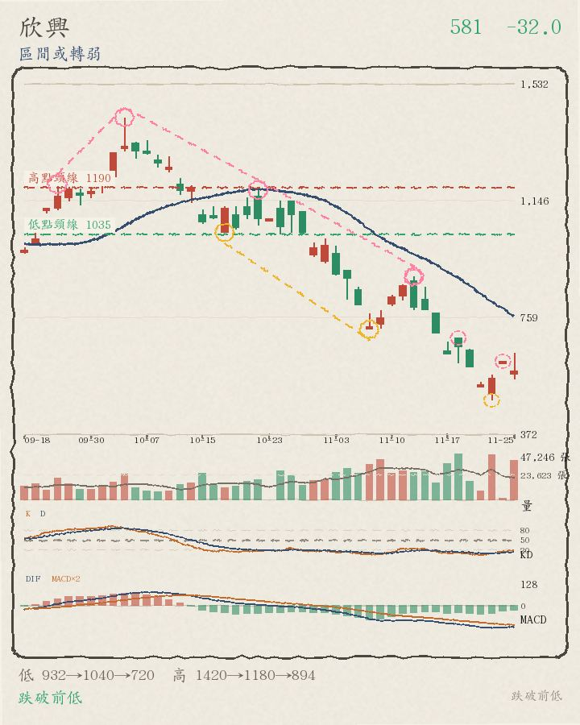
12:31 盤中 581（-5.22%），比加權指數弱 0.25 個百分點、跌破月線 788.95，離高點頸線 1190 還差 51.2%，轉折還沒走出明顯方向。
- 月線位置：現價 581 在月線 788.95 之下（-26.4%）；5 日線 593.2 也在月線之下（短均在下）；月線向下
- 量能：以已過交易時間推估，今天成交量約是 20 日均量的 1.83 倍（爆量），比 20 日均量大不少；下跌卻量增，量價背離
- 關鍵價位：已跌破前一個轉折低點；高點頸線 1190 還在現價上方 51.2%；前一交易日高點 613（低於 5.2%）；今天盤中高點 640（低於 9.2%）；今天盤中低點 555（高於 4.7%）
- 轉折結構：低點 932、1040、720 與高點 1420、1180、894 都沒有明顯遞增，屬於區間震盪或轉弱；還沒確認的轉折低點 11-23 484.5；還沒確認的轉折高點 11-18 691、11-24 613（圖上虛線小圈）
景碩 3189 上市
506 -8.0（-1.56%）
區間或轉弱 盤中成交值 218.95 億・全榜第 7 名（上市第 7 名）・相對大盤 +3.41
好條件 0/7：無
不好條件 5/7：跌破前低、今日下跌、在月線之下、跌破昨日低點、月線下彎
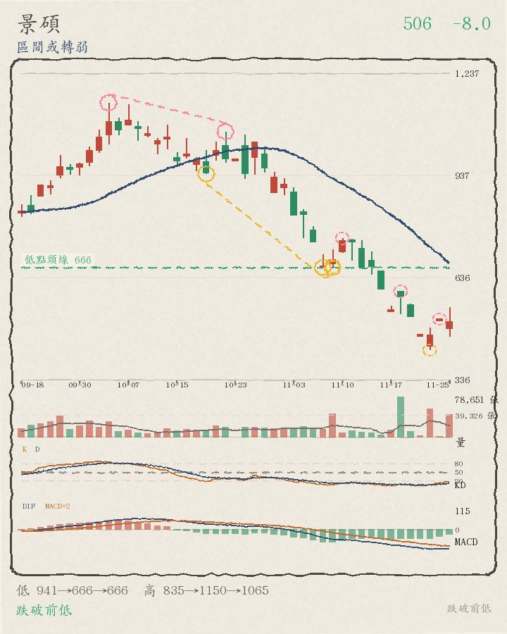
12:31 盤中 506（-1.56%），比加權指數強 3.41 個百分點、跌破月線 704.775，轉折還沒走出明顯方向。
- 月線位置：現價 506 在月線 704.775 之下（-28.2%）；5 日線 510.5 也在月線之下（短均在下）；月線向下
- 量能：以已過交易時間推估，今天成交量約是 20 日均量的 2.76 倍（爆量），比 20 日均量大不少；下跌卻量增，量價背離
- 關鍵價位：前一交易日高點 514（低於 1.6%）；今天盤中高點 549（低於 7.8%）；今天盤中低點 463（高於 9.3%）
- 轉折結構：低點 941、666、666 與高點 835、1150、1065 都沒有明顯遞增，屬於區間震盪或轉弱；還沒確認的轉折低點 11-09 666、11-23 423；還沒確認的轉折高點 11-18 596、11-24 514（圖上虛線小圈）
金像電 2368 上市
897 +37.0（+4.30%）
區間或轉弱 盤中成交值 213.32 億・全榜第 8 名（上市第 8 名）・相對大盤 +9.27
好條件 1/7：攻擊量（量增＋上漲）
不好條件 2/7：在月線之下、月線下彎
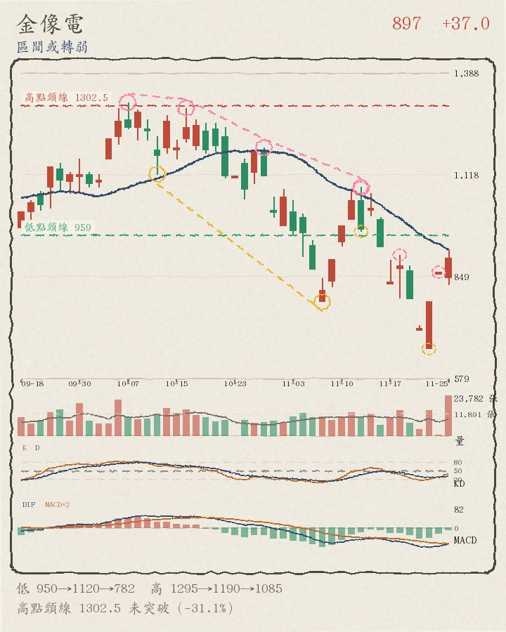
12:31 盤中 897（+4.30%），比加權指數強 9.27 個百分點、跌破月線 935.45，離高點頸線 1302.5 還差 31.1%，轉折還沒走出明顯方向。
- 月線位置：現價 897 在月線 935.45 之下（-4.1%）；5 日線 804 也在月線之下（短均在下）；月線向下
- 量能：以已過交易時間推估，今天成交量約是 20 日均量的 3.04 倍（爆量），比 20 日均量大不少；上漲又量增，量價配合
- 關鍵價位：高點頸線 1302.5 還沒突破，差 31.1%；前一交易日高點 860（高於 4.3%）；今天盤中高點 921（低於 2.6%）；今天盤中低點 827（高於 8.5%）
- 轉折結構：低點 950、1120、782 與高點 1295、1190、1085 都沒有明顯遞增，屬於區間震盪或轉弱；還沒確認的轉折低點 11-12 968、11-23 657；還沒確認的轉折高點 11-18 906、11-24 860（圖上虛線小圈）
台玻 1802 上市
61.1 -2.8（-4.38%）
區間或轉弱 盤中成交值 197.3 億・全榜第 9 名（上市第 9 名）・相對大盤 +0.59
好條件 0/7：無
不好條件 4/7：今日下跌、在月線之下、跌破昨日低點、月線下彎
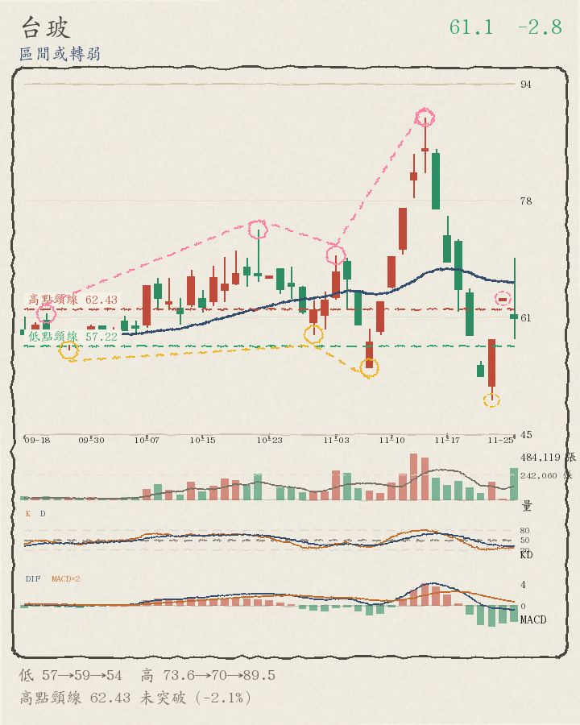
12:31 盤中 61.1（-4.38%），比加權指數強 0.59 個百分點、跌破月線 66.355，離高點頸線 62.43 還差 2.1%，轉折還沒走出明顯方向。
- 月線位置：現價 61.1 在月線 66.355 之下（-7.9%）；5 日線 59.76 也在月線之下（短均在下）；月線向下
- 量能：以已過交易時間推估，今天成交量約是 20 日均量的 2.28 倍（爆量），比 20 日均量大不少；下跌卻量增，量價背離
- 關鍵價位：高點頸線 62.43 還沒突破，差 2.1%；前一交易日高點 63.9（低於 4.4%）；今天盤中高點 69.6（低於 12.2%）；今天盤中低點 58.2（高於 5.0%）
- 轉折結構：低點 56.6、58.8、54.1 與高點 73.6、70、89.5 都沒有明顯遞增，屬於區間震盪或轉弱；還沒確認的轉折低點 11-23 49.5；還沒確認的轉折高點 11-13 89.5、11-24 63.9（圖上虛線小圈）
奇鋐 3017 上市
2605 +5.0（+0.19%）
區間或轉弱 盤中成交值 193.06 億・全榜第 10 名（上市第 10 名）・相對大盤 +5.16
好條件 1/7：攻擊量（量增＋上漲）
不好條件 2/7：在月線之下、月線下彎
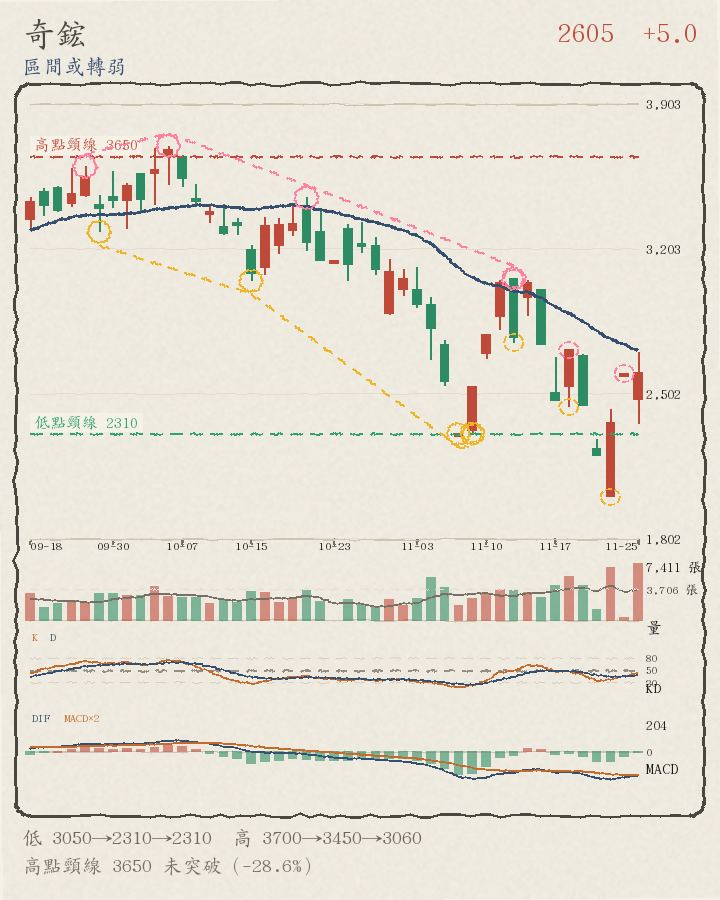
12:31 盤中 2605（+0.19%），比加權指數強 5.16 個百分點、跌破月線 2741.5，離高點頸線 3650 還差 28.6%，轉折還沒走出明顯方向。
- 月線位置：現價 2605 在月線 2741.5 之下（-5.0%）；5 日線 2466 也在月線之下（短均在下）；月線向下
- 量能：以已過交易時間推估，今天成交量約是 20 日均量的 2.75 倍（爆量），比 20 日均量大不少；上漲又量增，量價配合
- 關鍵價位：高點頸線 3650 還沒突破，差 28.6%；前一交易日高點 2600（高於 0.2%）；今天盤中高點 2705（低於 3.7%）；今天盤中低點 2360（高於 10.4%）
- 轉折結構：低點 3050、2310、2310 與高點 3700、3450、3060 都沒有明顯遞增，屬於區間震盪或轉弱；還沒確認的轉折低點 11-18 2440、11-23 2005；還沒確認的轉折高點 11-18 2715、11-24 2600（圖上虛線小圈）
台燿 6274 上櫃
745 -8.0（-1.06%）
區間或轉弱 盤中成交值 188.52 億・全榜第 11 名（上櫃第 1 名）・相對大盤 +3.91
好條件 0/7：無
不好條件 5/7：跌破前低、今日下跌、在月線之下、跌破昨日低點、月線下彎
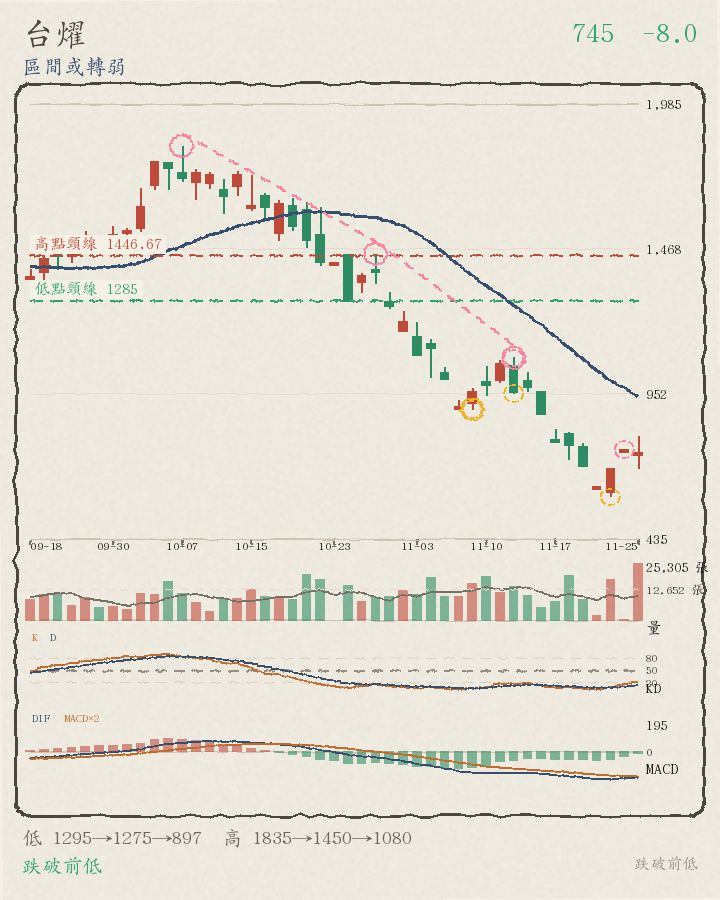
12:31 盤中 745（-1.06%），比加權指數強 3.91 個百分點、跌破月線 973.9，離高點頸線 1446.67 還差 48.5%，轉折還沒走出明顯方向。
- 月線位置：現價 745 在月線 973.9 之下（-23.5%）；5 日線 704.2 也在月線之下（短均在下）；月線向下
- 量能：以已過交易時間推估，今天成交量約是 20 日均量的 2.66 倍（爆量），比 20 日均量大不少；下跌卻量增，量價背離
- 關鍵價位：已跌破前一個轉折低點；高點頸線 1446.67 還在現價上方 48.5%；前一交易日高點 753（低於 1.1%）；今天盤中高點 801（低於 7.0%）；今天盤中低點 685（高於 8.8%）
- 轉折結構：低點 1295、1275、897 與高點 1835、1450、1080 都沒有明顯遞增，屬於區間震盪或轉弱；還沒確認的轉折低點 11-12 954、11-23 585；還沒確認的轉折高點 11-12 1080、11-24 753（圖上虛線小圈）
大立光 3008 上市
4045 +65.0（+1.63%）
區間或轉弱 盤中成交值 177.29 億・全榜第 12 名（上市第 11 名）・相對大盤 +6.60
好條件 1/7：攻擊量（量增＋上漲）
不好條件 3/7：跌破前低、在月線之下、月線下彎
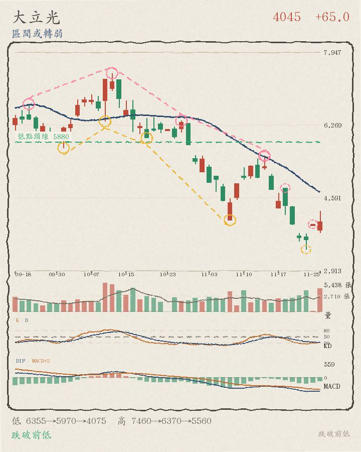
12:31 盤中 4045（+1.63%），比加權指數強 6.60 個百分點、跌破月線 4833.25，轉折還沒走出明顯方向。
- 月線位置：現價 4045 在月線 4833.25 之下（-16.3%）；5 日線 3932 也在月線之下（短均在下）；月線向下
- 量能：以已過交易時間推估，今天成交量約是 20 日均量的 2.29 倍（爆量），比 20 日均量大不少；上漲又量增，量價配合
- 關鍵價位：前一交易日高點 3980（高於 1.6%）；今天盤中高點 4280（低於 5.5%）；今天盤中低點 3790（高於 6.7%）
- 轉折結構：低點 6355、5970、4075 與高點 7460、6370、5560 都沒有明顯遞增，屬於區間震盪或轉弱；還沒確認的轉折低點 11-23 3400；還沒確認的轉折高點 11-18 4820、11-24 3980（圖上虛線小圈）
聯電 2303 上市
87.4 -9.7（-9.99%）
區間或轉弱 盤中成交值 163.97 億・全榜第 13 名（上市第 12 名）・相對大盤 -5.02
好條件 0/7：無
不好條件 6/7：跌破前低、今日下跌、相對大盤弱、在月線之下、跌破昨日低點、月線下彎
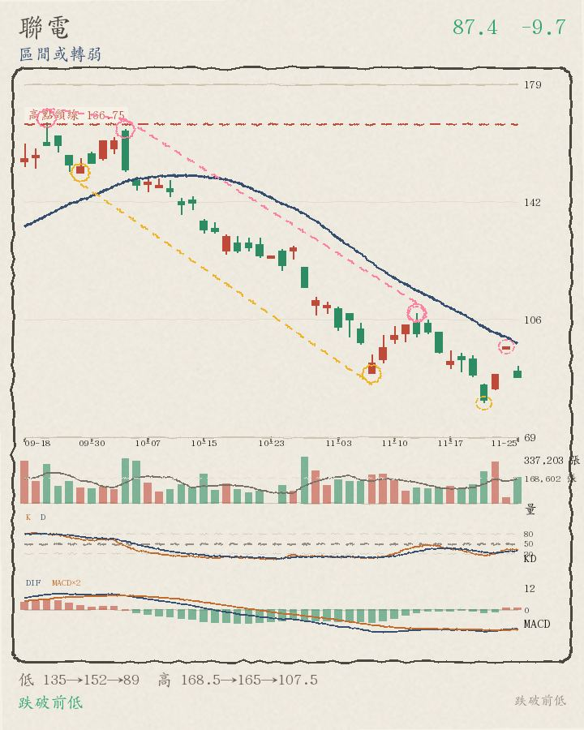
12:31 盤中 87.4（-9.99%），比加權指數弱 5.02 個百分點、跌破月線 100.105，離高點頸線 166.75 還差 47.6%，轉折還沒走出明顯方向。
- 月線位置：現價 87.4 在月線 100.105 之下（-12.7%）；5 日線 89.38 也在月線之下（短均在下）；月線向下
- 量能：以已過交易時間推估，今天成交量約是 20 日均量的 1.47 倍（量增），比 20 日均量大不少；下跌卻量增，量價背離
- 關鍵價位：已跌破前一個轉折低點；高點頸線 166.75 還在現價上方 47.6%；前一交易日高點 97.1（低於 10.0%）；今天盤中高點 91（低於 4.0%）；今天盤中低點 87.4（高於 0.0%）
- 轉折結構：低點 135、151.5、88.6 與高點 168.5、165、107.5 都沒有明顯遞增，屬於區間震盪或轉弱；還沒確認的轉折低點 11-20 79.4；還沒確認的轉折高點 11-12 107.5、11-24 97.1（圖上虛線小圈）
鴻海 2317 上市
208 -18.5（-8.17%）
區間或轉弱 盤中成交值 163.69 億・全榜第 14 名（上市第 13 名）・相對大盤 -3.20
好條件 0/7：無
不好條件 6/7：跌破前低、今日下跌、相對大盤弱、在月線之下、跌破昨日低點、月線下彎
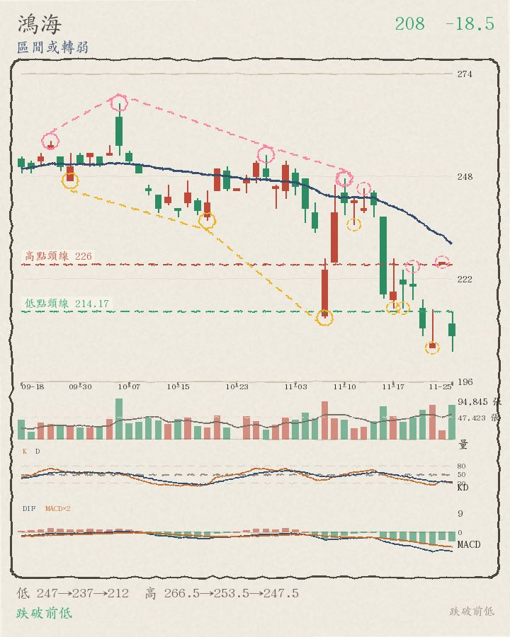
12:31 盤中 208（-8.17%），比加權指數弱 3.20 個百分點、跌破月線 233.3，離高點頸線 226 還差 8.0%，轉折還沒走出明顯方向。
- 月線位置：現價 208 在月線 233.3 之下（-10.8%）；5 日線 216.8 也在月線之下（短均在下）；月線向下
- 量能：以已過交易時間推估，今天成交量約是 20 日均量的 2.04 倍（爆量），比 20 日均量大不少；下跌卻量增，量價背離
- 關鍵價位：已跌破前一個轉折低點；高點頸線 226 還在現價上方 8.0%；前一交易日高點 226.5（低於 8.2%）；今天盤中高點 214（低於 2.8%）；今天盤中低點 204（高於 2.0%）
- 轉折結構：低點 247、237、212.5 與高點 266.5、253.5、247.5 都沒有明顯遞增，屬於區間震盪或轉弱；還沒確認的轉折低點 11-18 215、11-23 205；還沒確認的轉折高點 11-19 225.5、11-24 226.5（圖上虛線小圈）
世芯-KY 3661 上市
3690 -225.0（-5.75%）
區間或轉弱 盤中成交值 160.51 億・全榜第 15 名（上市第 14 名）・相對大盤 -0.78
好條件 2/7：站上月線、月線向上
不好條件 3/7：今日下跌、相對大盤弱、跌破昨日低點
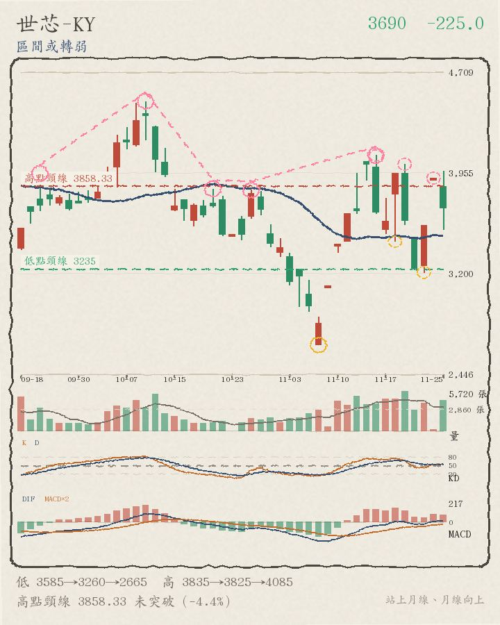
12:31 盤中 3690（-5.75%），比加權指數弱 0.78 個百分點、站上月線 3490.25，離高點頸線 3858.33 還差 4.4%，轉折還沒走出明顯方向。
- 月線位置：現價 3690 在月線 3490.25 之上（+5.7%）；5 日線 3653 也在月線之上（短均在上）；月線向上
- 量能：以已過交易時間推估，今天成交量約是 20 日均量的 1.87 倍（爆量），比 20 日均量大不少；下跌卻量增，量價背離
- 關鍵價位：高點頸線 3858.33 還沒突破，差 4.4%；前一交易日高點 3915（低於 5.7%）；今天盤中高點 3970（低於 7.1%）；今天盤中低點 3530（高於 4.5%）
- 轉折結構：低點 3585、3260、2665 與高點 3835、3825、4085 都沒有明顯遞增，屬於區間震盪或轉弱；還沒確認的轉折低點 11-18 3440、11-23 3210；還沒確認的轉折高點 11-19 4020、11-24 3915（圖上虛線小圈）
貿聯-KY 3665 上市
1635 +65.0（+4.14%）
區間或轉弱 盤中成交值 157.71 億・全榜第 16 名（上市第 15 名）・相對大盤 +9.11
好條件 3/7：站上月線、突破頸線、攻擊量（量增＋上漲）
不好條件 1/7：月線下彎
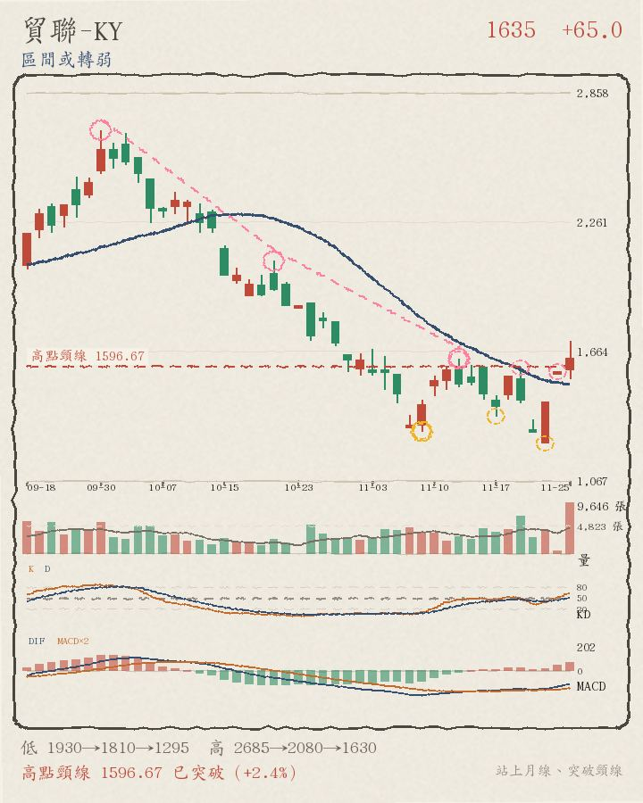
12:31 盤中 1635（+4.14%），比加權指數強 9.11 個百分點、站上月線 1522，已突破高點頸線 1596.67，轉折還沒走出明顯方向。
- 月線位置：現價 1635 在月線 1522 之上（+7.4%）；5 日線 1458 也在月線之下（短均在下）；月線向下
- 量能：以已過交易時間推估，今天成交量約是 20 日均量的 3.21 倍（爆量），比 20 日均量大不少；上漲又量增，量價配合
- 關鍵價位：高點頸線 1596.67 已站上；前一交易日高點 1570（高於 4.1%）；今天盤中高點 1710（低於 4.4%）；今天盤中低點 1540（高於 6.2%）
- 轉折結構：低點 1930、1810、1295 與高點 2685、2080、1630 都沒有明顯遞增，屬於區間震盪或轉弱；還沒確認的轉折低點 11-17 1365、11-23 1240；還沒確認的轉折高點 11-19 1590、11-24 1570（圖上虛線小圈）
日月光投控 3711 上市
494.5 -35.5（-6.70%）
區間或轉弱 盤中成交值 152.51 億・全榜第 17 名（上市第 16 名）・相對大盤 -1.73
好條件 0/7：無
不好條件 6/7：跌破前低、今日下跌、相對大盤弱、在月線之下、跌破昨日低點、月線下彎
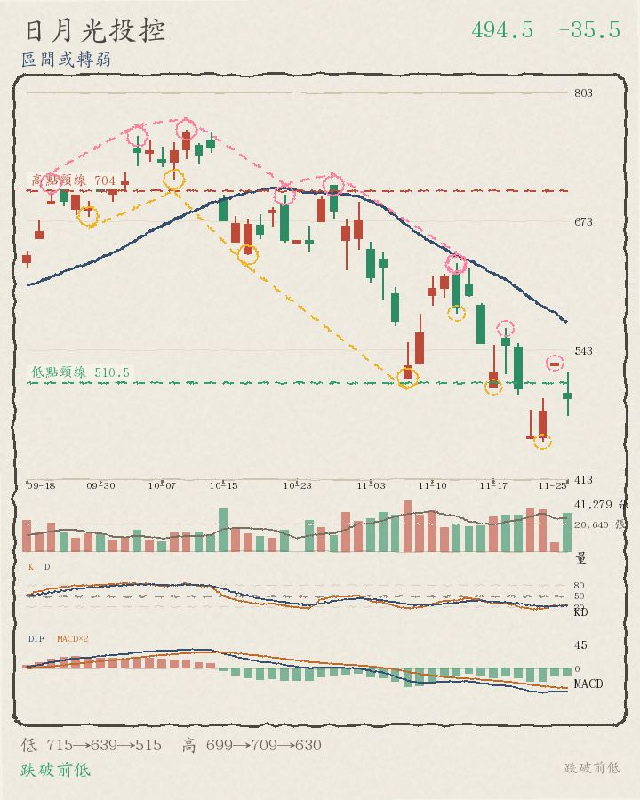
12:31 盤中 494.5（-6.70%），比加權指數弱 1.73 個百分點、跌破月線 581，離高點頸線 704 還差 29.8%，轉折還沒走出明顯方向。
- 月線位置：現價 494.5 在月線 581 之下（-14.9%）；5 日線 504.2 也在月線之下（短均在下）；月線向下
- 量能：以已過交易時間推估，今天成交量約是 20 日均量的 1.46 倍（量增），比 20 日均量大不少；下跌卻量增，量價背離
- 關鍵價位：已跌破前一個轉折低點；高點頸線 704 還在現價上方 29.8%；前一交易日高點 530（低於 6.7%）；今天盤中高點 521（低於 5.1%）；今天盤中低點 477（高於 3.7%）
- 轉折結構：低點 715、639、515 與高點 699、709、630 都沒有明顯遞增，屬於區間震盪或轉弱；還沒確認的轉折低點 11-17 506、11-23 451；還沒確認的轉折高點 11-18 565、11-24 530（圖上虛線小圈）
國巨* 2327 上市
315.5 -25.5（-7.48%）
區間或轉弱 盤中成交值 130.65 億・全榜第 18 名（上市第 17 名）・相對大盤 -2.51
好條件 0/7：無
不好條件 6/7：跌破前低、今日下跌、相對大盤弱、在月線之下、跌破昨日低點、月線下彎
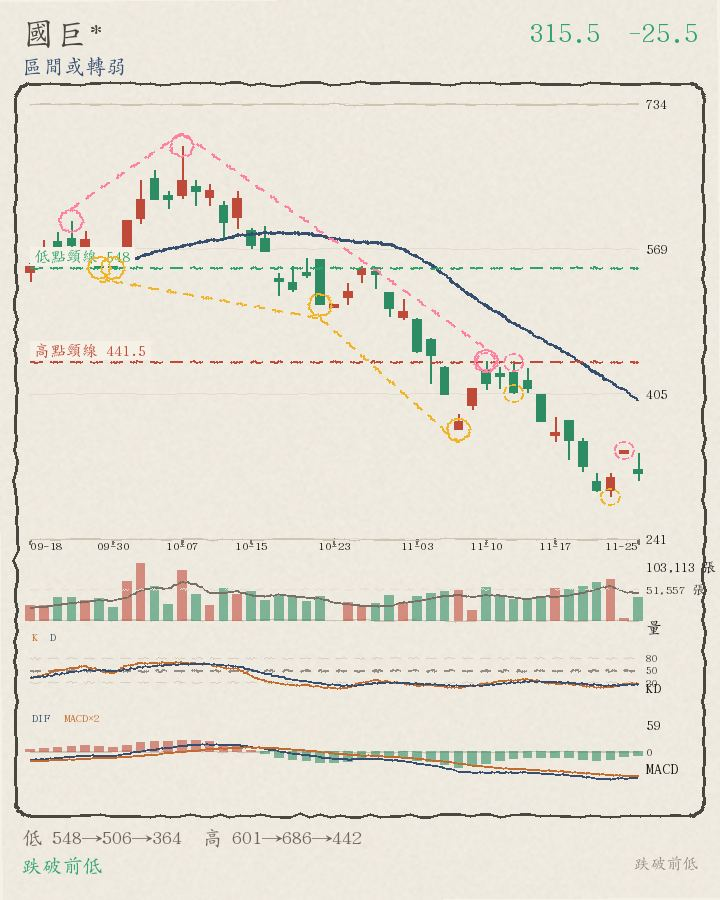
12:31 盤中 315.5（-7.48%），比加權指數弱 2.51 個百分點、跌破月線 409.875，離高點頸線 441.5 還差 28.5%，轉折還沒走出明顯方向。
- 月線位置：現價 315.5 在月線 409.875 之下（-23.0%）；5 日線 324.3 也在月線之下（短均在下）；月線向下
- 量能：以已過交易時間推估，今天成交量約是 20 日均量的 1.17 倍（量增），比 20 日均量大不少；下跌卻量增，量價背離
- 關鍵價位：已跌破前一個轉折低點；高點頸線 441.5 還在現價上方 28.5%；前一交易日高點 341（低於 7.5%）；今天盤中高點 338（低於 6.7%）；今天盤中低點 307（高於 2.8%）
- 轉折結構：低點 548、506、364.5 與高點 601、686、442 都沒有明顯遞增，屬於區間震盪或轉弱；還沒確認的轉折低點 11-12 405.5、11-23 288.5；還沒確認的轉折高點 11-12 441、11-24 341（圖上虛線小圈）
智邦 2345 上市
1495 +10.0（+0.67%）
區間或轉弱 盤中成交值 126.01 億・全榜第 19 名（上市第 18 名）・相對大盤 +5.64
好條件 2/7：站上月線、攻擊量（量增＋上漲）
不好條件 1/7：月線下彎
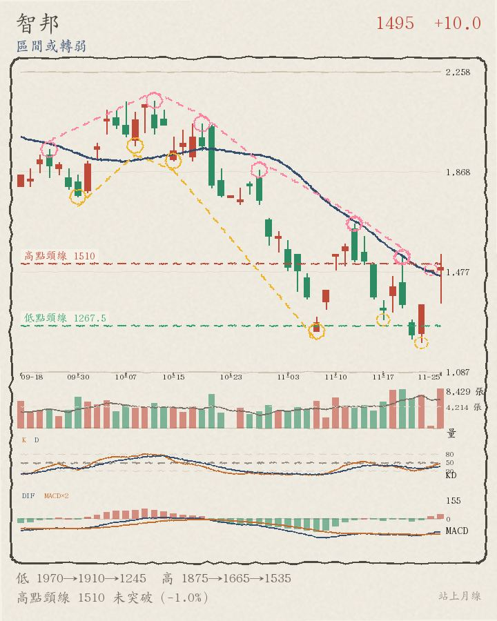
12:31 盤中 1495（+0.67%），比加權指數強 5.64 個百分點、站上月線 1477.5，離高點頸線 1510 還差 1.0%，轉折還沒走出明顯方向。
- 月線位置：現價 1495 在月線 1477.5 之上（+1.2%）；5 日線 1367 也在月線之下（短均在下）；月線向下
- 量能：以已過交易時間推估，今天成交量約是 20 日均量的 2.21 倍（爆量），比 20 日均量大不少；上漲又量增，量價配合
- 關鍵價位：高點頸線 1510 還沒突破，差 1.0%；前一交易日高點 1485（高於 0.7%）；今天盤中高點 1545（低於 3.2%）；今天盤中低點 1355（高於 10.3%）
- 轉折結構：低點 1970、1910、1245 與高點 1875、1665、1535 都沒有明顯遞增，屬於區間震盪或轉弱；還沒確認的轉折低點 11-17 1290、11-23 1200；還沒確認的轉折高點 11-19 1535、11-24 1485（圖上虛線小圈）
南電 8046 上市
678 -59.0（-8.01%）
區間或轉弱 盤中成交值 121.47 億・全榜第 20 名（上市第 19 名）・相對大盤 -3.04
好條件 0/7：無
不好條件 6/7：跌破前低、今日下跌、相對大盤弱、在月線之下、跌破昨日低點、月線下彎
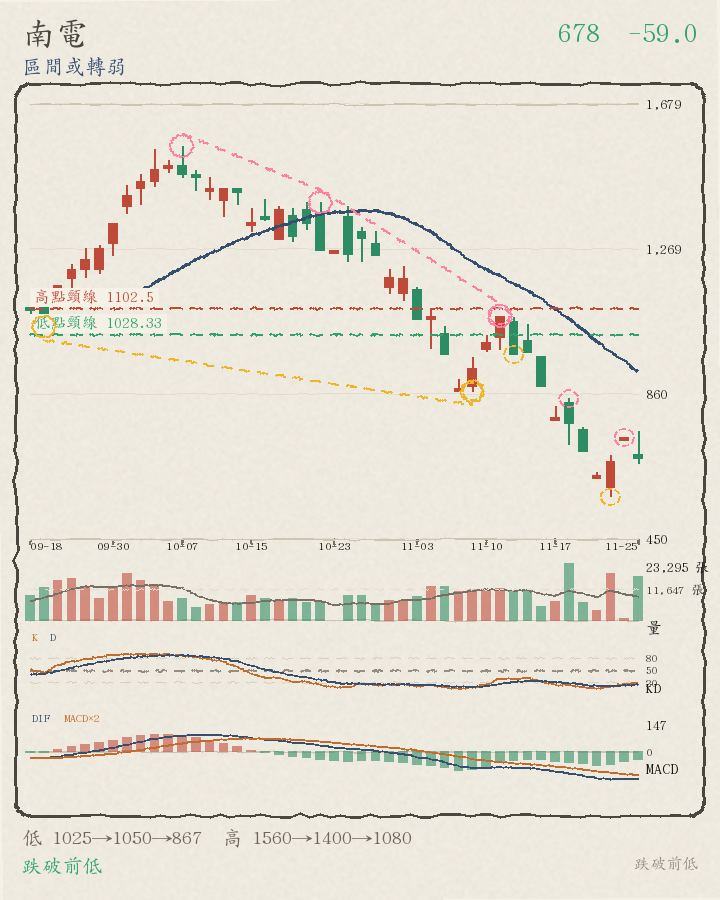
12:31 盤中 678（-8.01%），比加權指數弱 3.04 個百分點、跌破月線 953.5，離高點頸線 1102.5 還差 38.5%，轉折還沒走出明顯方向。
- 月線位置：現價 678 在月線 953.5 之下（-28.9%）；5 日線 701.8 也在月線之下（短均在下）；月線向下
- 量能：以已過交易時間推估，今天成交量約是 20 日均量的 2.10 倍（爆量），比 20 日均量大不少；下跌卻量增，量價背離
- 關鍵價位：已跌破前一個轉折低點；高點頸線 1102.5 還在現價上方 38.5%；前一交易日高點 737（低於 8.0%）；今天盤中高點 755（低於 10.2%）；今天盤中低點 664（高於 2.1%）
- 轉折結構：低點 1025、1050、867 與高點 1560、1400、1080 都沒有明顯遞增，屬於區間震盪或轉弱；還沒確認的轉折低點 11-12 972、11-23 569；還沒確認的轉折高點 11-18 846、11-24 737（圖上虛線小圈）
穩懋 3105 上櫃
404.5 -44.5（-9.91%）
區間或轉弱 盤中成交值 116.17 億・全榜第 21 名（上櫃第 2 名）・相對大盤 -4.94
好條件 0/7：無
不好條件 5/7：今日下跌、相對大盤弱、在月線之下、跌破昨日低點、月線下彎

12:31 盤中 404.5（-9.91%），比加權指數弱 4.94 個百分點、跌破月線 492.475，離高點頸線 580.33 還差 30.3%，轉折還沒走出明顯方向。
- 月線位置：現價 404.5 在月線 492.475 之下（-17.9%）；5 日線 426.3 也在月線之下（短均在下）；月線向下
- 量能：以已過交易時間推估，今天成交量約是 20 日均量的 1.25 倍（量增），比 20 日均量大不少；下跌卻量增，量價背離
- 關鍵價位：高點頸線 580.33 還沒突破，差 30.3%；前一交易日高點 449（低於 9.9%）；今天盤中高點 465（低於 13.0%）；今天盤中低點 404.5（高於 0.0%）
- 轉折結構：低點 454、479、403.5 與高點 630、596、573 都沒有明顯遞增，屬於區間震盪或轉弱；還沒確認的轉折低點 11-09 403.5、11-23 351；還沒確認的轉折高點 11-18 510、11-24 449（圖上虛線小圈）
量增
↑ 回上方清單
聯茂 6213 上市
393.5 -36.5（-8.49%）
區間或轉弱 盤中成交值 114.62 億・全榜第 22 名（上市第 20 名）・相對大盤 -3.52
好條件 0/7：無
不好條件 6/7：跌破前低、今日下跌、相對大盤弱、在月線之下、跌破昨日低點、月線下彎
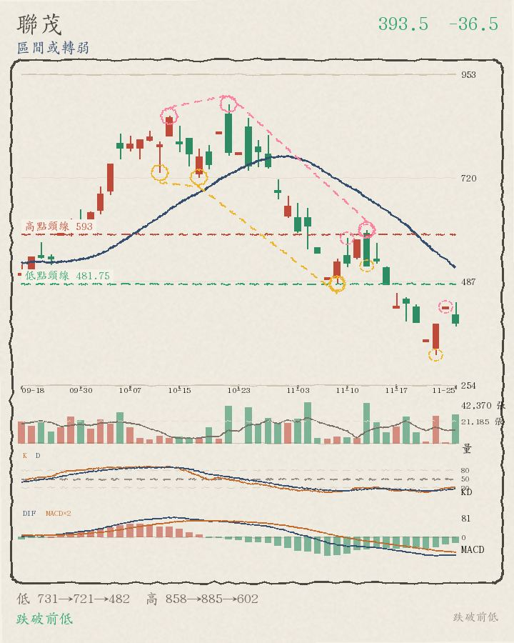
12:31 盤中 393.5（-8.49%），比加權指數弱 3.52 個百分點、跌破月線 537.05，離高點頸線 593 還差 33.6%，轉折還沒走出明顯方向。
- 月線位置：現價 393.5 在月線 537.05 之下（-26.7%）；5 日線 402 也在月線之下（短均在下）；月線向下
- 量能：以已過交易時間推估，今天成交量約是 20 日均量的 2.00 倍（爆量），比 20 日均量大不少；下跌卻量增，量價背離
- 關鍵價位：已跌破前一個轉折低點；高點頸線 593 還在現價上方 33.6%；前一交易日高點 430（低於 8.5%）；今天盤中高點 439（低於 10.4%）；今天盤中低點 387（高於 1.7%）
- 轉折結構：低點 731、721、481.5 與高點 858、885、602 都沒有明顯遞增，屬於區間震盪或轉弱；還沒確認的轉折低點 11-12 522、11-23 321.5；還沒確認的轉折高點 11-12 602、11-24 430（圖上虛線小圈）
南亞科 2408 上市
281.5 -27.5（-8.90%）
區間或轉弱 盤中成交值 111.17 億・全榜第 23 名（上市第 21 名）・相對大盤 -3.93
好條件 0/7：無
不好條件 6/7：跌破前低、今日下跌、相對大盤弱、在月線之下、跌破昨日低點、月線下彎
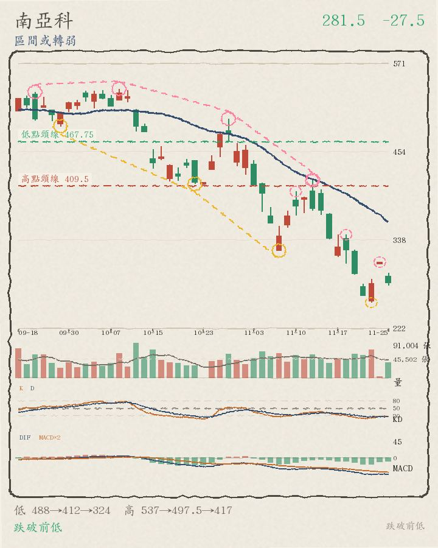
12:31 盤中 281.5（-8.90%），比加權指數弱 3.93 個百分點、跌破月線 371.225，離高點頸線 409.5 還差 31.3%，轉折還沒走出明顯方向。
- 月線位置：現價 281.5 在月線 371.225 之下（-24.2%）；5 日線 294.6 也在月線之下（短均在下）；月線向下
- 量能：以已過交易時間推估，今天成交量約是 20 日均量的 0.96 倍（量平），跟 20 日均量差不多
- 關鍵價位：已跌破前一個轉折低點；高點頸線 409.5 還在現價上方 31.3%；前一交易日高點 309（低於 8.9%）；今天盤中高點 294.5（低於 4.4%）；今天盤中低點 278.5（高於 1.1%）
- 轉折結構：低點 488、412、324 與高點 537、497.5、417 都沒有明顯遞增，屬於區間震盪或轉弱；還沒確認的轉折低點 11-23 255.5；還沒確認的轉折高點 11-18 345、11-24 309（圖上虛線小圈）
京元電子 2449 上市
174 +1.5（+0.87%）
區間或轉弱 盤中成交值 104.85 億・全榜第 24 名（上市第 22 名）・相對大盤 +5.84
好條件 1/7：攻擊量（量增＋上漲）
不好條件 3/7：跌破前低、在月線之下、月線下彎
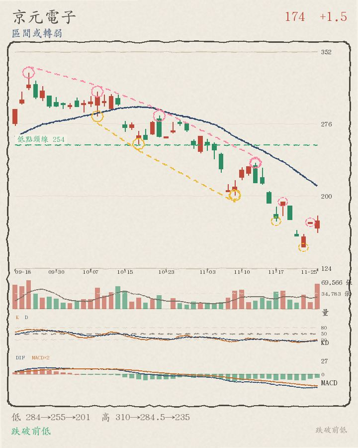
12:31 盤中 174（+0.87%），比加權指數強 5.84 個百分點、跌破月線 216.025，轉折還沒走出明顯方向。
- 月線位置：現價 174 在月線 216.025 之下（-19.4%）；5 日線 171.2 也在月線之下（短均在下）；月線向下
- 量能：以已過交易時間推估，今天成交量約是 20 日均量的 3.29 倍（爆量），比 20 日均量大不少；上漲又量增，量價配合
- 關鍵價位：前一交易日高點 172.5（高於 0.9%）；今天盤中高點 179.5（低於 3.1%）；今天盤中低點 161.5（高於 7.7%）
- 轉折結構：低點 284、255、201 與高點 310、284.5、235 都沒有明顯遞增，屬於區間震盪或轉弱；還沒確認的轉折低點 11-17 173.5、11-23 146；還沒確認的轉折高點 11-18 194、11-24 172.5（圖上虛線小圈）
群聯 8299 上櫃
1515 -80.0（-5.02%）
區間或轉弱 盤中成交值 96.28 億・全榜第 25 名（上櫃第 3 名）・相對大盤 -0.05
好條件 0/7：無
不好條件 5/7：今日下跌、相對大盤弱、在月線之下、跌破昨日低點、月線下彎
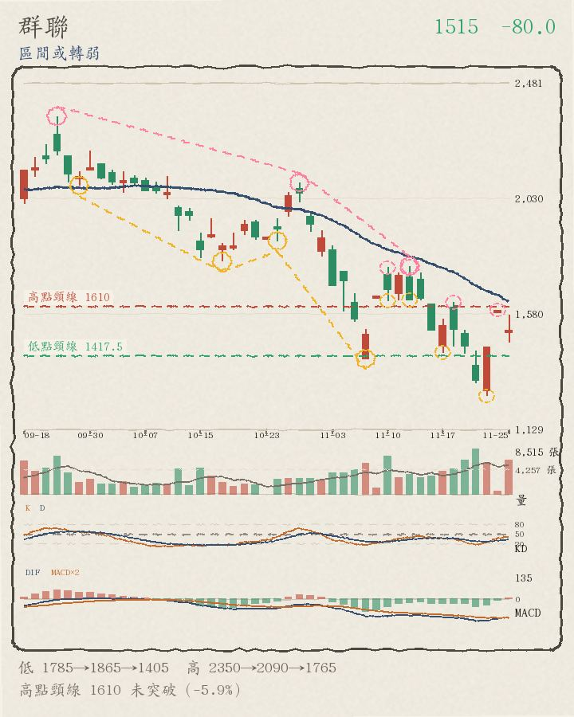
12:31 盤中 1515（-5.02%），比加權指數弱 0.05 個百分點、跌破月線 1653.75，離高點頸線 1610 還差 5.9%，轉折還沒走出明顯方向。
- 月線位置：現價 1515 在月線 1653.75 之下（-8.4%）；5 日線 1468 也在月線之下（短均在下）；月線向下
- 量能：以已過交易時間推估，今天成交量約是 20 日均量的 1.95 倍（爆量），比 20 日均量大不少；下跌卻量增，量價背離
- 關鍵價位：高點頸線 1610 還沒突破，差 5.9%；前一交易日高點 1595（低於 5.0%）；今天盤中高點 1575（低於 3.8%）；今天盤中低點 1470（高於 3.1%）
- 轉折結構：低點 1785、1865、1405 與高點 2350、2090、1765 都沒有明顯遞增，屬於區間震盪或轉弱；還沒確認的轉折低點 11-17 1430、11-23 1260；還沒確認的轉折高點 11-18 1625、11-24 1595（圖上虛線小圈）
川湖 2059 上市
6595 +395.0（+6.37%）
區間或轉弱 盤中成交值 85.87 億・全榜第 26 名（上市第 23 名）・相對大盤 +11.34
好條件 1/7：攻擊量（量增＋上漲）
不好條件 3/7：跌破前低、在月線之下、月線下彎
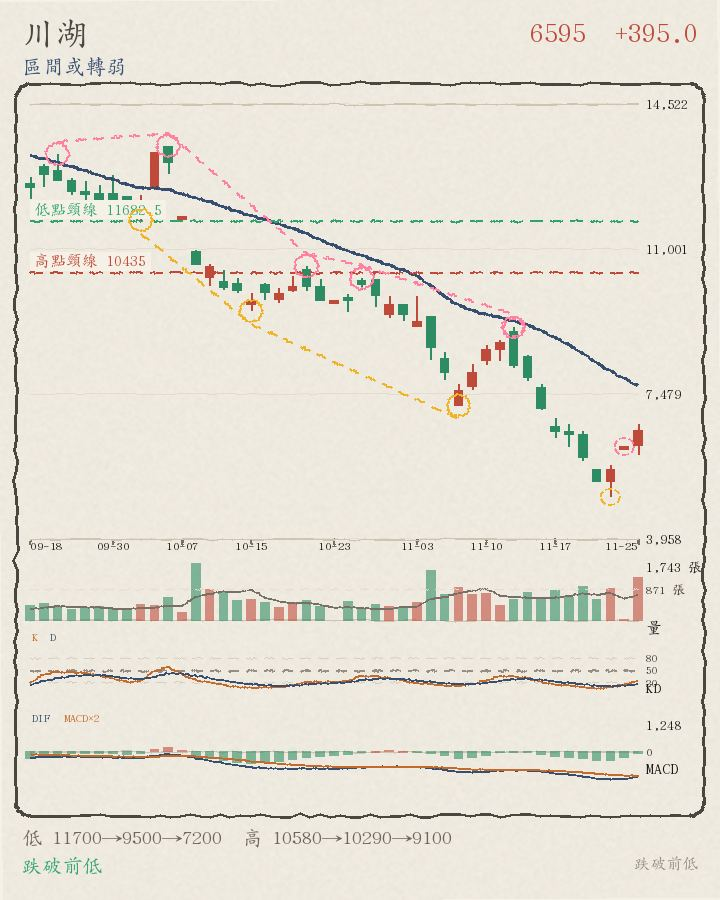
12:31 盤中 6595（+6.37%），比加權指數強 11.34 個百分點、跌破月線 7859.5，離高點頸線 10435 還差 36.8%，轉折還沒走出明顯方向。
- 月線位置：現價 6595 在月線 7859.5 之下（-16.1%）；5 日線 5930 也在月線之下（短均在下）；月線向下
- 量能：以已過交易時間推估，今天成交量約是 20 日均量的 2.33 倍（爆量），比 20 日均量大不少；上漲又量增，量價配合
- 關鍵價位：已跌破前一個轉折低點；高點頸線 10435 還在現價上方 36.8%；前一交易日高點 6200（高於 6.4%）；今天盤中高點 6740（低於 2.2%）；今天盤中低點 6015（高於 9.6%）
- 轉折結構：低點 11700、9500、7200 與高點 10580、10290、9100 都沒有明顯遞增，屬於區間震盪或轉弱；還沒確認的轉折低點 11-23 4980；還沒確認的轉折高點 11-12 9100、11-24 6200（圖上虛線小圈）
臻鼎-KY 4958 上市
333 -31.5（-8.64%）
區間或轉弱 盤中成交值 83.14 億・全榜第 27 名（上市第 24 名）・相對大盤 -3.67
好條件 0/7：無
不好條件 6/7：跌破前低、今日下跌、相對大盤弱、在月線之下、跌破昨日低點、月線下彎
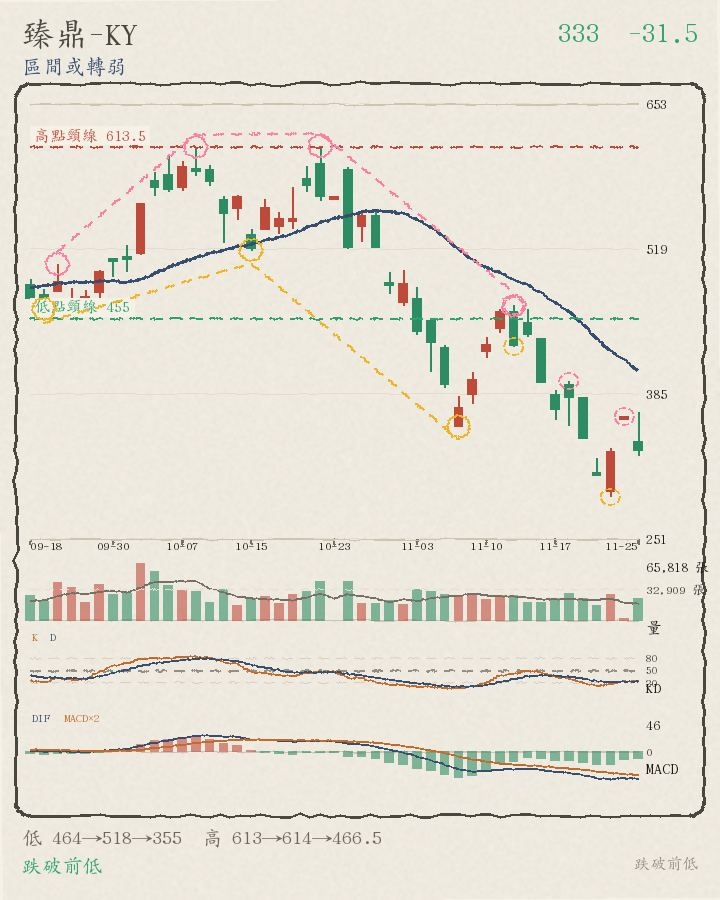
12:31 盤中 333（-8.64%），比加權指數弱 3.67 個百分點、跌破月線 417.2，離高點頸線 613.5 還差 45.7%，轉折還沒走出明顯方向。
- 月線位置：現價 333 在月線 417.2 之下（-20.2%）；5 日線 346.4 也在月線之下（短均在下）；月線向下
- 量能：以已過交易時間推估，今天成交量約是 20 日均量的 1.21 倍（量增），比 20 日均量大不少；下跌卻量增，量價背離
- 關鍵價位：已跌破前一個轉折低點；高點頸線 613.5 還在現價上方 45.7%；前一交易日高點 364.5（低於 8.6%）；今天盤中高點 367.5（低於 9.4%）；今天盤中低點 328.5（高於 1.4%）
- 轉折結構：低點 463.5、518、355 與高點 613、614、466.5 都沒有明顯遞增，屬於區間震盪或轉弱；還沒確認的轉折低點 11-12 429、11-23 290；還沒確認的轉折高點 11-18 397、11-24 364.5（圖上虛線小圈）
富喬 1815 上櫃
102 -10.5（-9.33%）
區間或轉弱 盤中成交值 69.27 億・全榜第 28 名（上櫃第 4 名）・相對大盤 -4.36
好條件 0/7：無
不好條件 7/7：跌破前低、今日下跌、相對大盤弱、在月線之下、貼近今日低點（1% 內）、跌破昨日低點、月線下彎
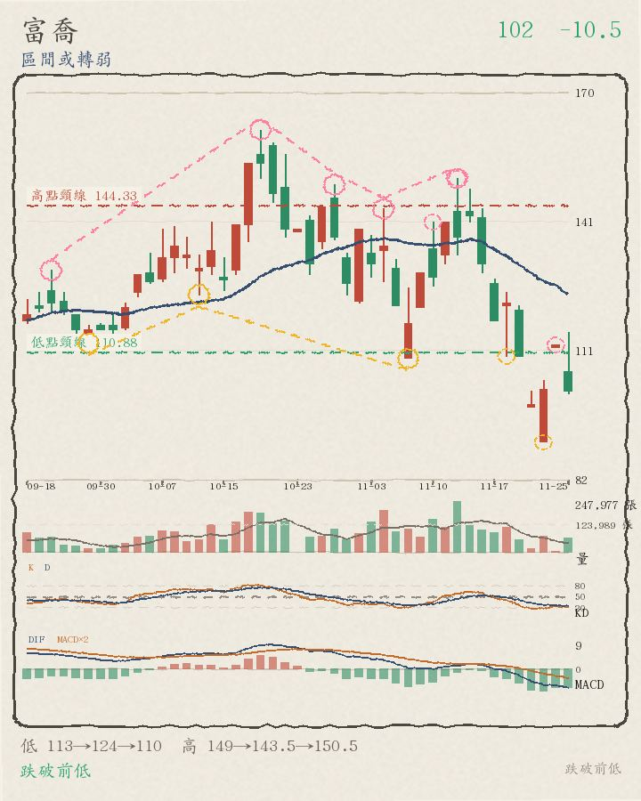
12:31 盤中 102（-9.33%），比加權指數弱 4.36 個百分點、跌破月線 126.15，離高點頸線 144.33 還差 29.3%，轉折還沒走出明顯方向。
- 月線位置：現價 102 在月線 126.15 之下（-19.1%）；5 日線 109.2 也在月線之下（短均在下）；月線向下
- 量能：以已過交易時間推估，今天成交量約是 20 日均量的 0.80 倍（量平），比 20 日均量少很多
- 關鍵價位：已跌破前一個轉折低點；高點頸線 144.33 還在現價上方 29.3%；前一交易日高點 112.5（低於 9.3%）；今天盤中高點 115.5（低於 11.7%）；今天盤中低點 101.5（高於 0.5%）
- 轉折結構：低點 113、124、109.5 與高點 149、143.5、150.5 都沒有明顯遞增，屬於區間震盪或轉弱；還沒確認的轉折低點 11-18 110、11-23 90.4；還沒確認的轉折高點 11-12 150.5、11-24 112.5（圖上虛線小圈）
健策 3653 上市
4170 +120.0（+2.96%）
區間或轉弱 盤中成交值 64.3 億・全榜第 29 名（上市第 25 名）・相對大盤 +7.93
好條件 0/7：無
不好條件 3/7：跌破前低、在月線之下、月線下彎
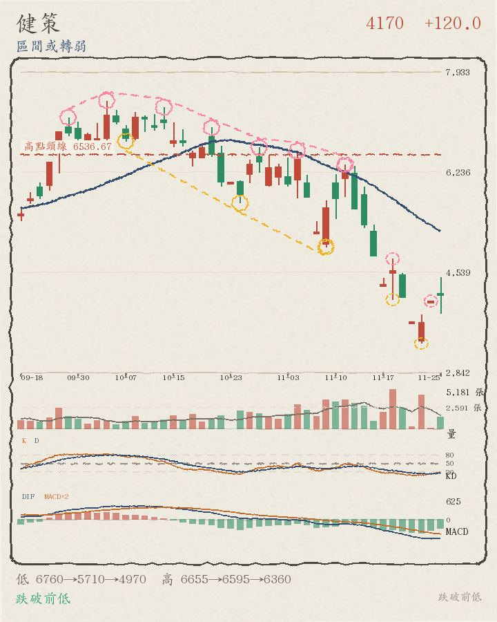
12:31 盤中 4170（+2.96%），比加權指數強 7.93 個百分點、跌破月線 5340.25，離高點頸線 6536.67 還差 36.2%，轉折還沒走出明顯方向。
- 月線位置：現價 4170 在月線 5340.25 之下（-21.9%）；5 日線 4025 也在月線之下（短均在下）；月線向下
- 量能：以已過交易時間推估，今天成交量約是 20 日均量的 0.77 倍（量平），比 20 日均量少很多；上漲但量縮，量價背離
- 關鍵價位：已跌破前一個轉折低點；高點頸線 6536.67 還在現價上方 36.2%；前一交易日高點 4050（高於 3.0%）；今天盤中高點 4455（低於 6.4%）；今天盤中低點 3845（高於 8.5%）
- 轉折結構：低點 6760、5710、4970 與高點 6655、6595、6360 都沒有明顯遞增，屬於區間震盪或轉弱；還沒確認的轉折低點 11-18 4075、11-23 3335；還沒確認的轉折高點 11-18 4765、11-24 4050（圖上虛線小圈）
緯穎 6669 上市
1455 -55.0（-3.64%）
區間或轉弱 盤中成交值 62.67 億・全榜第 30 名（上市第 26 名）・相對大盤 +1.33
好條件 0/7：無
不好條件 5/7：跌破前低、今日下跌、在月線之下、跌破昨日低點、月線下彎
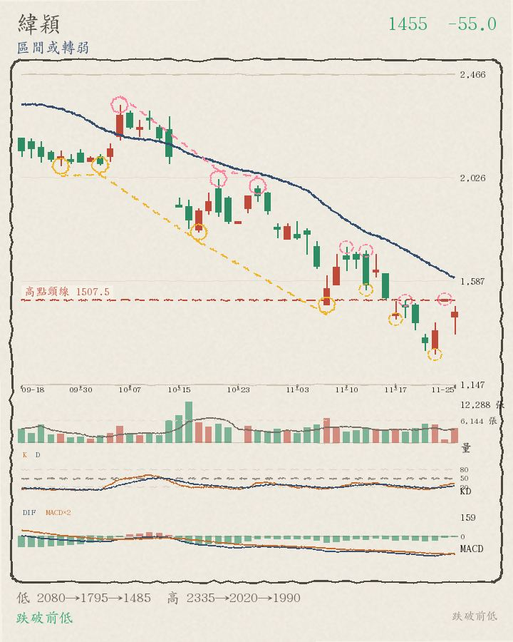
12:31 盤中 1455（-3.64%），比加權指數強 1.33 個百分點、跌破月線 1624.75，離高點頸線 1507.5 還差 3.5%，轉折還沒走出明顯方向。
- 月線位置：現價 1455 在月線 1624.75 之下（-10.4%）；5 日線 1419 也在月線之下（短均在下）；月線向下
- 量能：以已過交易時間推估，今天成交量約是 20 日均量的 1.31 倍（量增），比 20 日均量大不少；下跌卻量增，量價背離
- 關鍵價位：已跌破前一個轉折低點；高點頸線 1507.5 還在現價上方 3.5%；前一交易日高點 1510（低於 3.6%）；今天盤中高點 1480（低於 1.7%）；今天盤中低點 1360（高於 7.0%）
- 轉折結構：低點 2080、1795、1485 與高點 2335、2020、1990 都沒有明顯遞增，屬於區間震盪或轉弱；還沒確認的轉折低點 11-17 1425、11-23 1275；還沒確認的轉折高點 11-18 1505、11-24 1510（圖上虛線小圈）
致茂 2360 上市
1020 +5.0（+0.49%）
區間或轉弱 盤中成交值 62.56 億・全榜第 31 名（上市第 27 名）・相對大盤 +5.46
好條件 1/7：攻擊量（量增＋上漲）
不好條件 3/7：跌破前低、在月線之下、月線下彎
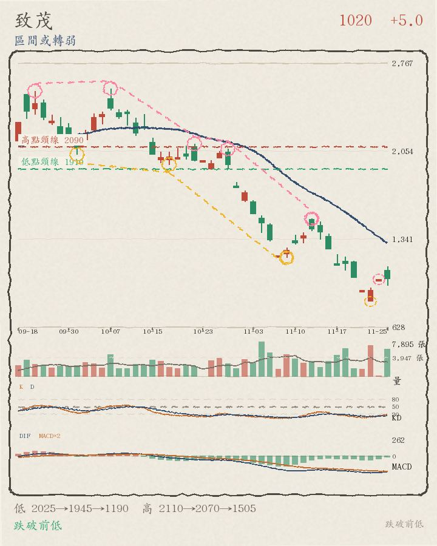
12:31 盤中 1020（+0.49%），比加權指數強 5.46 個百分點、跌破月線 1359.45，離高點頸線 2090 還差 51.2%，轉折還沒走出明顯方向。
- 月線位置：現價 1020 在月線 1359.45 之下（-25.0%）；5 日線 1007.8 也在月線之下（短均在下）；月線向下
- 量能：以已過交易時間推估，今天成交量約是 20 日均量的 2.07 倍（爆量），比 20 日均量大不少；上漲又量增，量價配合
- 關鍵價位：已跌破前一個轉折低點；高點頸線 2090 還在現價上方 51.2%；前一交易日高點 1015（高於 0.5%）；今天盤中高點 1115（低於 8.5%）；今天盤中低點 963（高於 5.9%）
- 轉折結構：低點 2025、1945、1190 與高點 2110、2070、1505 都沒有明顯遞增，屬於區間震盪或轉弱；還沒確認的轉折低點 11-09 1190、11-23 835；還沒確認的轉折高點 11-12 1505、11-24 1015（圖上虛線小圈）
中華電 2412 上市
164 -0.5（-0.30%）
高點墊高、底部不穩 盤中成交值 62.05 億・全榜第 32 名（上市第 28 名）・相對大盤 +4.67
好條件 3/7：站上月線、月線向上、頭頭高
不好條件 2/7：今日下跌、貼近今日低點（1% 內）
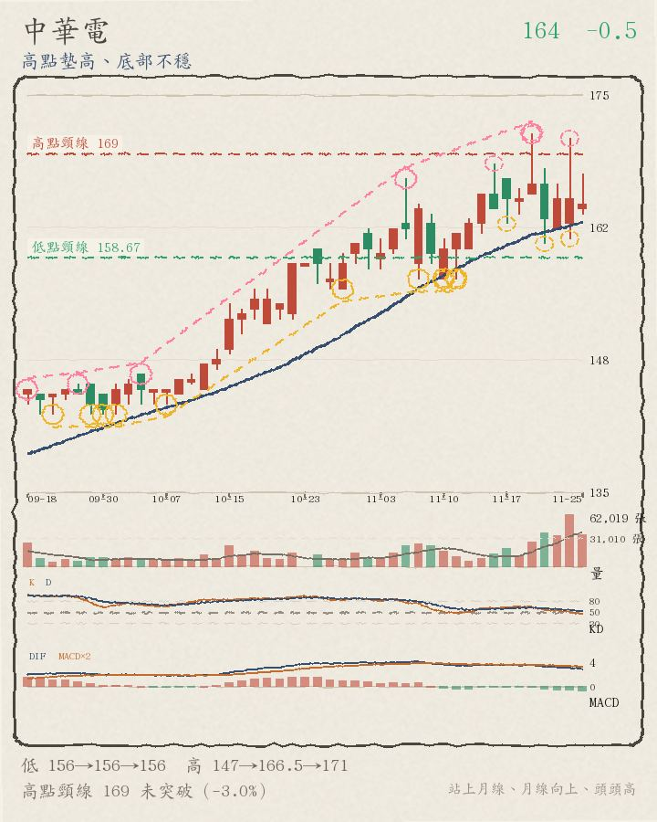
12:31 盤中 164（-0.30%），比加權指數強 4.67 個百分點、站上月線 161.8，離高點頸線 169 還差 3.0%，高點還在墊高（但底部沒同步墊高）。
- 月線位置：現價 164 在月線 161.8 之上（+1.4%）；5 日線 164.4 也在月線之上（短均在上）；月線向上
- 量能：以已過交易時間推估，今天成交量約是 20 日均量的 2.72 倍（爆量），比 20 日均量大不少；下跌卻量增，量價背離
- 關鍵價位：高點頸線 169 還沒突破，差 3.0%；前一交易日高點 170.5（低於 3.8%）；今天盤中高點 167（低於 1.8%）；今天盤中低點 163（高於 0.6%）
- 轉折結構：高點 147、166.5、171 墊高（頭頭高），但低點 156.5、156.5、156.5 沒有同步墊高；還沒確認的轉折低點 11-20 160、11-24 160.5；還沒確認的轉折高點 11-19 171、11-24 170.5（圖上虛線小圈）
華邦電 2344 上市
95.1 -9.9（-9.43%）
區間或轉弱 盤中成交值 61.56 億・全榜第 33 名（上市第 29 名）・相對大盤 -4.46
好條件 0/7：無
不好條件 7/7：跌破前低、今日下跌、相對大盤弱、在月線之下、貼近今日低點（1% 內）、跌破昨日低點、月線下彎
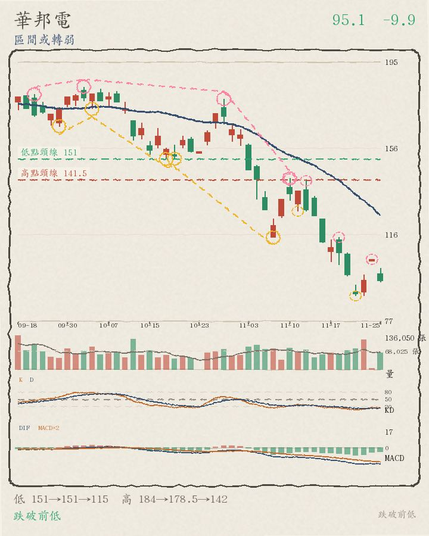
12:31 盤中 95.1（-9.43%），比加權指數弱 4.46 個百分點、跌破月線 129.01，離高點頸線 141.5 還差 32.8%，轉折還沒走出明顯方向。
- 月線位置：現價 95.1 在月線 129.01 之下（-26.3%）；5 日線 99.14 也在月線之下（短均在下）；月線向下
- 量能：以已過交易時間推估，今天成交量約是 20 日均量的 1.14 倍（量增），比 20 日均量大一些；下跌卻量增，量價背離
- 關鍵價位：已跌破前一個轉折低點；高點頸線 141.5 還在現價上方 32.8%；前一交易日高點 105（低於 9.4%）；今天盤中高點 101（低於 5.8%）；今天盤中低點 94.5（高於 0.6%）
- 轉折結構：低點 151、151、115 與高點 184、178.5、142 都沒有明顯遞增，屬於區間震盪或轉弱；還沒確認的轉折低點 11-11 127、11-20 88.2；還沒確認的轉折高點 11-18 115、11-24 105（圖上虛線小圈）
大量 3167 上市
605 -9.0（-1.47%）
區間或轉弱 盤中成交值 61.1 億・全榜第 34 名（上市第 30 名）・相對大盤 +3.50
好條件 0/7：無
不好條件 5/7：跌破前低、今日下跌、在月線之下、跌破昨日低點、月線下彎
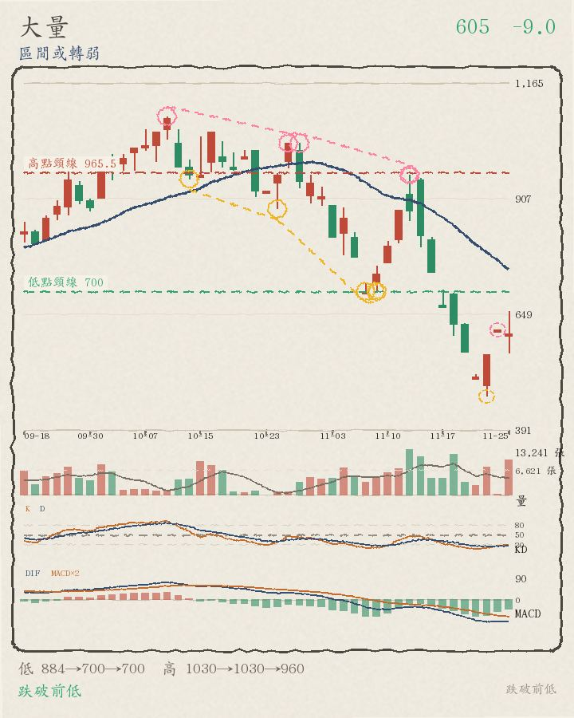
12:31 盤中 605（-1.47%），比加權指數強 3.50 個百分點、跌破月線 769.95，離高點頸線 965.5 還差 37.3%，轉折還沒走出明顯方向。
- 月線位置：現價 605 在月線 769.95 之下（-21.4%）；5 日線 574.8 也在月線之下（短均在下）；月線向下
- 量能：以已過交易時間推估，今天成交量約是 20 日均量的 2.24 倍（爆量），比 20 日均量大不少；下跌卻量增，量價背離
- 關鍵價位：已跌破前一個轉折低點；高點頸線 965.5 還在現價上方 37.3%；前一交易日高點 614（低於 1.5%）；今天盤中高點 655（低於 7.6%）；今天盤中低點 562（高於 7.7%）
- 轉折結構：低點 884、700、700 與高點 1030、1030、960 都沒有明顯遞增，屬於區間震盪或轉弱；還沒確認的轉折低點 11-09 700、11-23 466；還沒確認的轉折高點 11-12 960、11-24 614（圖上虛線小圈）
信驊 5274 上櫃
8900 -240.0（-2.63%）
區間或轉弱 盤中成交值 54.82 億・全榜第 35 名（上櫃第 5 名）・相對大盤 +2.34
好條件 0/7：無
不好條件 5/7：跌破前低、今日下跌、在月線之下、跌破昨日低點、月線下彎
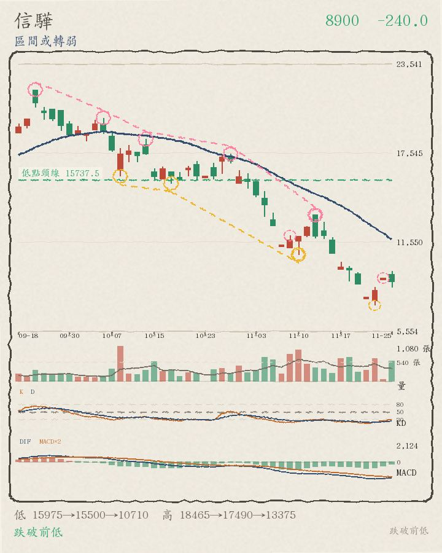
12:31 盤中 8900（-2.63%），比加權指數強 2.34 個百分點、跌破月線 12160.2，轉折還沒走出明顯方向。
- 月線位置：現價 8900 在月線 12160.2 之下（-26.8%）；5 日線 8748 也在月線之下（短均在下）；月線向下
- 量能：以已過交易時間推估，今天成交量約是 20 日均量的 1.63 倍（爆量），比 20 日均量大不少；下跌卻量增，量價背離
- 關鍵價位：前一交易日高點 9140（低於 2.6%）；今天盤中高點 9590（低於 7.2%）；今天盤中低點 8500（高於 4.7%）
- 轉折結構：低點 15975、15500、10710 與高點 18465、17490、13375 都沒有明顯遞增，屬於區間震盪或轉弱；還沒確認的轉折低點 11-10 10710、11-23 7295；還沒確認的轉折高點 11-12 13375、11-24 9140（圖上虛線小圈）
玉晶光 3406 上市
718 -16.0（-2.18%）
區間或轉弱 盤中成交值 53.79 億・全榜第 36 名（上市第 31 名）・相對大盤 +2.79
好條件 0/7：無
不好條件 5/7：跌破前低、今日下跌、在月線之下、跌破昨日低點、月線下彎
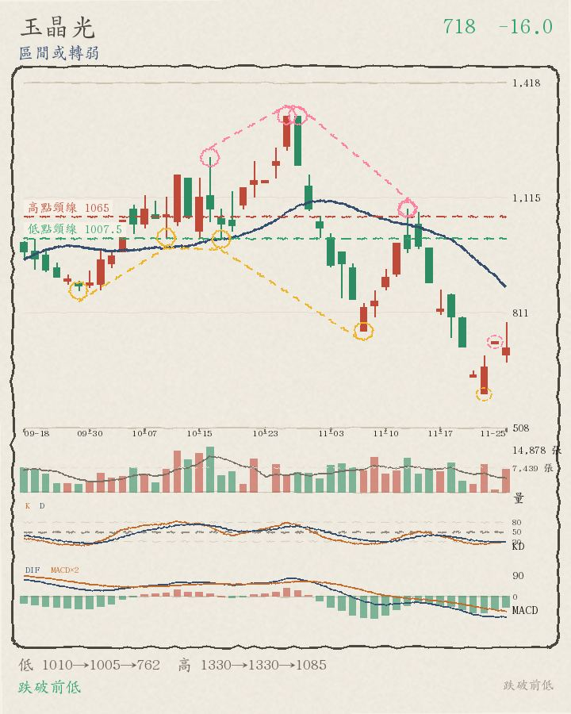
12:31 盤中 718（-2.18%），比加權指數強 2.79 個百分點、跌破月線 909.15，離高點頸線 1065 還差 32.6%，轉折還沒走出明顯方向。
- 月線位置：現價 718 在月線 909.15 之下（-21.0%）；5 日線 714 也在月線之下（短均在下）；月線向下
- 量能：以已過交易時間推估，今天成交量約是 20 日均量的 1.33 倍（量增），比 20 日均量大不少；下跌卻量增，量價背離
- 關鍵價位：已跌破前一個轉折低點；高點頸線 1065 還在現價上方 32.6%；前一交易日高點 734（低於 2.2%）；今天盤中高點 785（低於 8.5%）；今天盤中低點 681（高於 5.4%）
- 轉折結構：低點 1010、1005、762 與高點 1330、1330、1085 都沒有明顯遞增，屬於區間震盪或轉弱；還沒確認的轉折低點 11-23 596；還沒確認的轉折高點 11-12 1085、11-24 734（圖上虛線小圈）
旺矽 6223 上櫃
3840 -345.0（-8.24%）
區間或轉弱 盤中成交值 50.04 億・全榜第 37 名（上櫃第 6 名）・相對大盤 -3.27
好條件 0/7：無
不好條件 5/7：今日下跌、相對大盤弱、在月線之下、跌破昨日低點、月線下彎
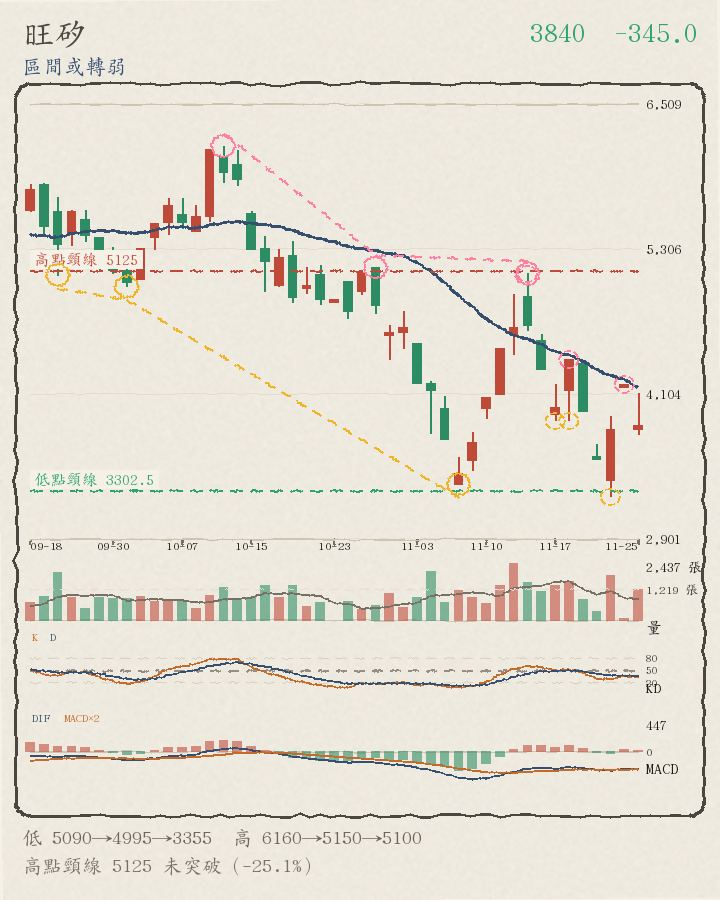
12:31 盤中 3840（-8.24%），比加權指數弱 3.27 個百分點、跌破月線 4224.75，離高點頸線 5125 還差 25.1%，轉折還沒走出明顯方向。
- 月線位置：現價 3840 在月線 4224.75 之下（-9.1%）；5 日線 3979 也在月線之下（短均在下）；月線向下
- 量能：以已過交易時間推估，今天成交量約是 20 日均量的 1.43 倍（量增），比 20 日均量大不少；下跌卻量增，量價背離
- 關鍵價位：高點頸線 5125 還沒突破，差 25.1%；前一交易日高點 4185（低於 8.2%）；今天盤中高點 4105（低於 6.5%）；今天盤中低點 3770（高於 1.9%）
- 轉折結構：低點 5090、4995、3355 與高點 6160、5150、5100 都沒有明顯遞增，屬於區間震盪或轉弱；還沒確認的轉折低點 11-18 3880、11-23 3250；還沒確認的轉折高點 11-18 4390、11-24 4185（圖上虛線小圈）
量增
↑ 回上方清單
長榮 2603 上市
254.5 -2.5（-0.97%）
區間或轉弱 盤中成交值 49.25 億・全榜第 38 名（上市第 32 名）・相對大盤 +4.00
好條件 1/7：守住今日高檔（距今日高點 1% 內）
不好條件 3/7：今日下跌、在月線之下、月線下彎
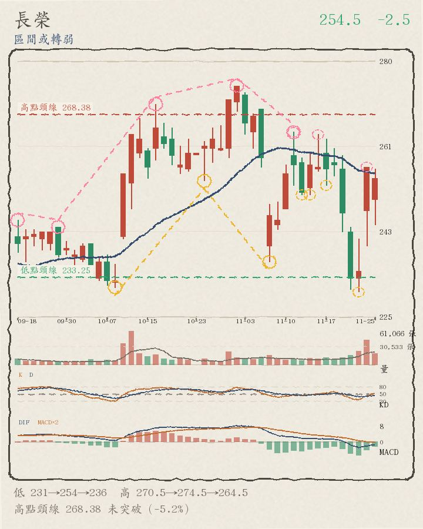
12:31 盤中 254.5（-0.97%），比加權指數強 4.00 個百分點、跌破月線 256，離高點頸線 268.38 還差 5.2%，轉折還沒走出明顯方向。
- 月線位置：現價 254.5 在月線 256 之下（-0.6%）；5 日線 245.8 也在月線之下（短均在下）；月線向下
- 量能：以已過交易時間推估，今天成交量約是 20 日均量的 2.11 倍（爆量），比 20 日均量大不少；下跌卻量增，量價背離
- 關鍵價位：高點頸線 268.38 還沒突破，差 5.2%；前一交易日高點 257（低於 1.0%）；今天盤中高點 256.5（低於 0.8%）；今天盤中低點 244.5（高於 4.1%）
- 轉折結構：低點 231、254、236.5 與高點 270.5、274.5、264.5 都沒有明顯遞增，屬於區間震盪或轉弱；還沒確認的轉折低點 11-17 253、11-23 230；還沒確認的轉折高點 11-16 264、11-24 257（圖上虛線小圈）
廣達 2382 上市
263 -19.5（-6.90%）
區間或轉弱 盤中成交值 43.92 億・全榜第 39 名（上市第 33 名）・相對大盤 -1.93
好條件 0/7：無
不好條件 6/7：跌破前低、今日下跌、相對大盤弱、在月線之下、跌破昨日低點、月線下彎
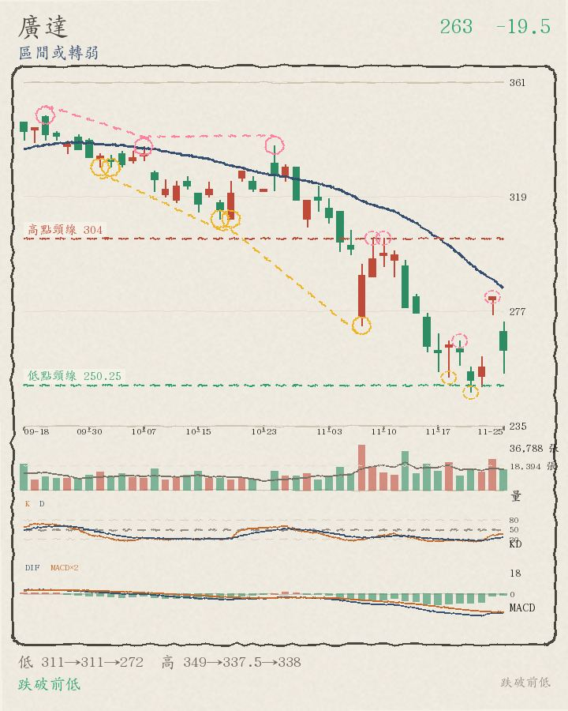
12:31 盤中 263（-6.90%），比加權指數弱 1.93 個百分點、跌破月線 289.125，離高點頸線 304 還差 13.5%，轉折還沒走出明顯方向。
- 月線位置：現價 263 在月線 289.125 之下（-9.0%）；5 日線 263.8 也在月線之下（短均在下）；月線向下
- 量能：以已過交易時間推估，今天成交量約是 20 日均量的 1.30 倍（量增），比 20 日均量大不少；下跌卻量增，量價背離
- 關鍵價位：已跌破前一個轉折低點；高點頸線 304 還在現價上方 13.5%；前一交易日高點 282.5（低於 6.9%）；今天盤中高點 273.5（低於 3.8%）；今天盤中低點 254.5（高於 3.3%）
- 轉折結構：低點 311、311、272 與高點 349、337.5、338 都沒有明顯遞增，屬於區間震盪或轉弱；還沒確認的轉折低點 11-18 253、11-20 247.5；還沒確認的轉折高點 11-19 266.5、11-24 282.5（圖上虛線小圈）
鴻勁 7769 上市
3060 -140.0（-4.37%）
區間或轉弱 盤中成交值 43.7 億・全榜第 40 名（上市第 34 名）・相對大盤 +0.60
好條件 0/7：無
不好條件 5/7：跌破前低、今日下跌、在月線之下、跌破昨日低點、月線下彎
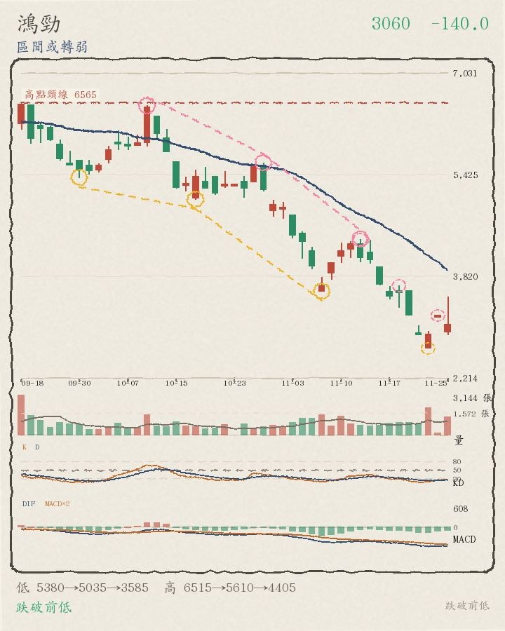
12:31 盤中 3060（-4.37%），比加權指數強 0.60 個百分點、跌破月線 4043.5，離高點頸線 6565 還差 53.4%，轉折還沒走出明顯方向。
- 月線位置：現價 3060 在月線 4043.5 之下（-24.3%）；5 日線 3155 也在月線之下（短均在下）；月線向下
- 量能：以已過交易時間推估，今天成交量約是 20 日均量的 1.88 倍（爆量），比 20 日均量大不少；下跌卻量增，量價背離
- 關鍵價位：已跌破前一個轉折低點；高點頸線 6565 還在現價上方 53.4%；前一交易日高點 3200（低於 4.4%）；今天盤中高點 3495（低於 12.4%）；今天盤中低點 2900（高於 5.5%）
- 轉折結構：低點 5380、5035、3585 與高點 6515、5610、4405 都沒有明顯遞增，屬於區間震盪或轉弱；還沒確認的轉折低點 11-23 2680；還沒確認的轉折高點 11-18 3670、11-24 3200（圖上虛線小圈）
定穎投控 3715 上市
136.5 +0.0（+0.00%）
高點墊高、底部不穩 盤中成交值 42.5 億・全榜第 41 名（上市第 35 名）・相對大盤 +4.97
好條件 2/7：站上月線、頭頭高
不好條件 1/7：月線下彎
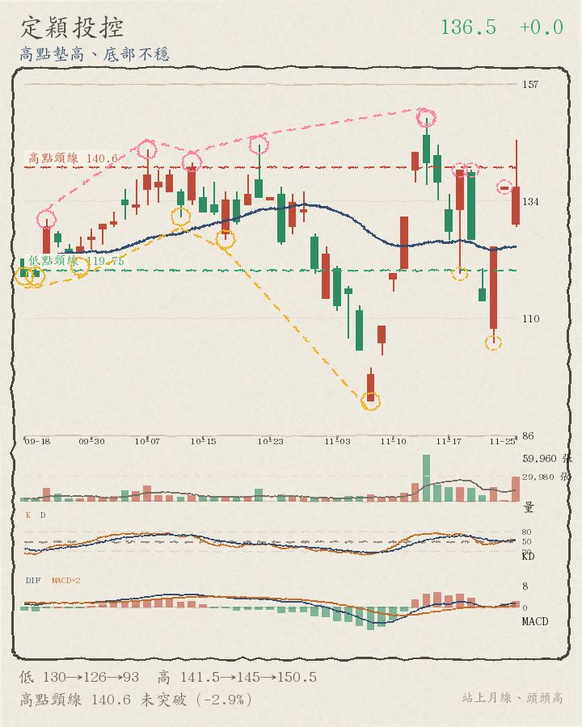
12:31 盤中 136.5（+0.00%），比加權指數強 4.97 個百分點、站上月線 124.335，離高點頸線 140.6 還差 2.9%，高點還在墊高（但底部沒同步墊高）。
- 月線位置：現價 136.5 在月線 124.335 之上（+9.8%）；5 日線 128.1 也在月線之上（短均在上）；月線向下
- 量能：以已過交易時間推估，今天成交量約是 20 日均量的 3.29 倍（爆量），比 20 日均量大不少
- 關鍵價位：高點頸線 140.6 還沒突破，差 2.9%；前一交易日高點 136.5（高於 0.0%）；今天盤中高點 146（低於 6.5%）；今天盤中低點 128.5（高於 6.2%）
- 轉折結構：高點 141.5、145、150.5 墊高（頭頭高），但低點 130.5、126、93.2 沒有同步墊高；還沒確認的轉折低點 11-18 119、11-23 105；還沒確認的轉折高點 11-19 140、11-24 136.5（圖上虛線小圈）
緯創 3231 上市
153.5 -9.5（-5.83%）
區間或轉弱 盤中成交值 40.53 億・全榜第 42 名（上市第 36 名）・相對大盤 -0.86
好條件 0/7：無
不好條件 5/7：今日下跌、相對大盤弱、在月線之下、跌破昨日低點、月線下彎
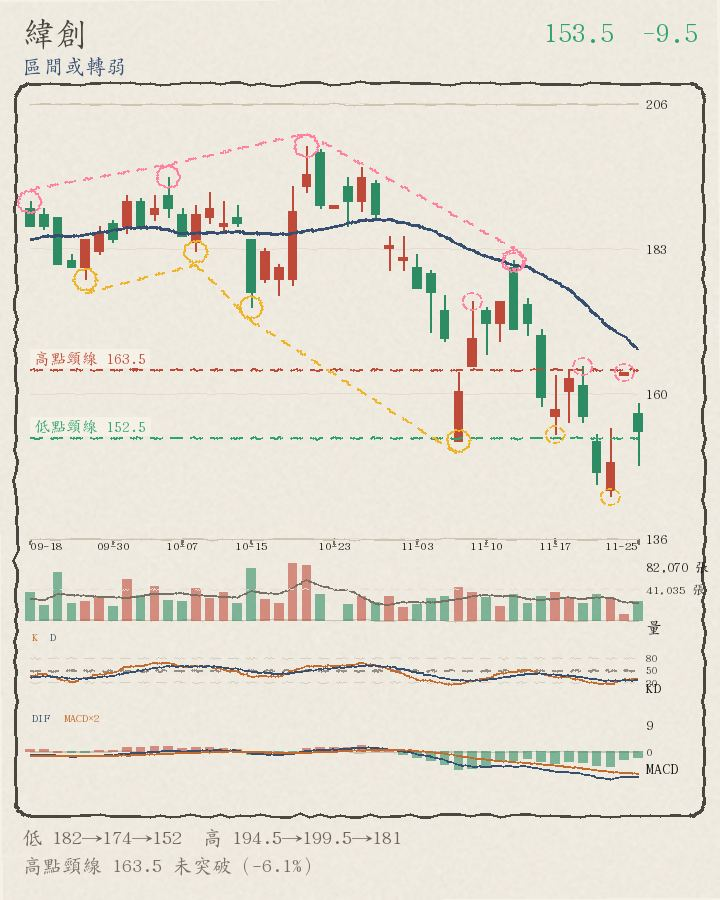
12:31 盤中 153.5（-5.83%），比加權指數弱 0.86 個百分點、跌破月線 168.825，離高點頸線 163.5 還差 6.1%，轉折還沒走出明顯方向。
- 月線位置：現價 153.5 在月線 168.825 之下（-9.1%）；5 日線 155.3 也在月線之下（短均在下）；月線向下
- 量能：以已過交易時間推估，今天成交量約是 20 日均量的 1.09 倍（量平），比 20 日均量大一些
- 關鍵價位：高點頸線 163.5 還沒突破，差 6.1%；前一交易日高點 163（低於 5.8%）；今天盤中高點 158（低於 2.8%）；今天盤中低點 148（高於 3.7%）
- 轉折結構：低點 182.5、173.5、152 與高點 194.5、199.5、181 都沒有明顯遞增，屬於區間震盪或轉弱；還沒確認的轉折低點 11-17 153、11-23 143；還沒確認的轉折高點 11-19 164、11-24 163（圖上虛線小圈）
量平
↑ 回上方清單
雙鴻 3324 上櫃
813 -41.0（-4.80%）
區間或轉弱 盤中成交值 40.19 億・全榜第 43 名（上櫃第 7 名）・相對大盤 +0.17
好條件 0/7：無
不好條件 5/7：跌破前低、今日下跌、在月線之下、跌破昨日低點、月線下彎
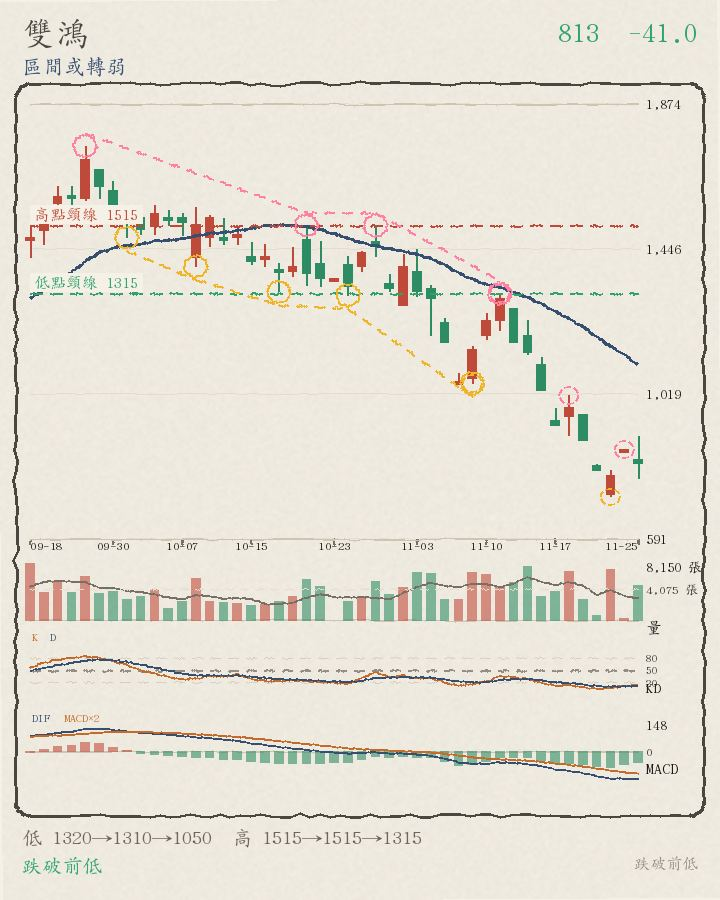
12:31 盤中 813（-4.80%），比加權指數強 0.17 個百分點、跌破月線 1135.4，離高點頸線 1515 還差 46.3%，轉折還沒走出明顯方向。
- 月線位置：現價 813 在月線 1135.4 之下（-28.4%）；5 日線 857.2 也在月線之下（短均在下）；月線向下
- 量能：以已過交易時間推估，今天成交量約是 20 日均量的 1.33 倍（量增），比 20 日均量大不少；下跌卻量增，量價背離
- 關鍵價位：已跌破前一個轉折低點；高點頸線 1515 還在現價上方 46.3%；前一交易日高點 854（低於 4.8%）；今天盤中高點 892（低於 8.9%）；今天盤中低點 769（高於 5.7%）
- 轉折結構：低點 1320、1310、1050 與高點 1515、1515、1315 都沒有明顯遞增，屬於區間震盪或轉弱；還沒確認的轉折低點 11-09 1050、11-23 715；還沒確認的轉折高點 11-18 1015、11-24 854（圖上虛線小圈）
力積電 6770 上市
48.15 -5.2（-9.66%）
區間或轉弱 盤中成交值 39.73 億・全榜第 44 名（上市第 37 名）・相對大盤 -4.69
好條件 0/7：無
不好條件 7/7：跌破前低、今日下跌、相對大盤弱、在月線之下、貼近今日低點（1% 內）、跌破昨日低點、月線下彎
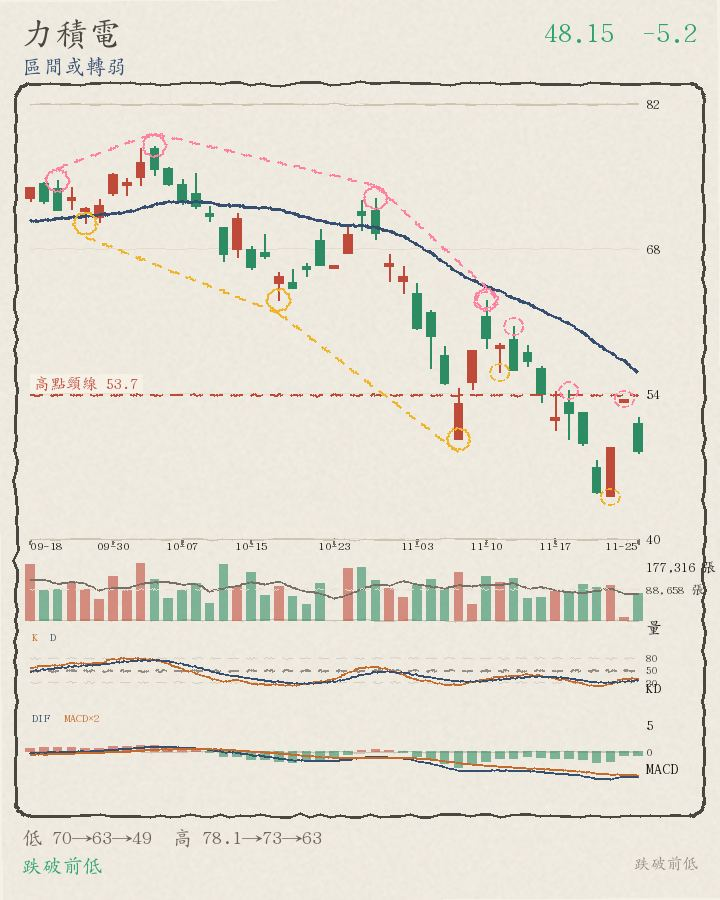
12:31 盤中 48.15（-9.66%），比加權指數弱 4.69 個百分點、跌破月線 57.04，離高點頸線 53.7 還差 10.3%，轉折還沒走出明顯方向。
- 月線位置：現價 48.15 在月線 57.04 之下（-15.6%）；5 日線 49.34 也在月線之下（短均在下）；月線向下
- 量能：以已過交易時間推估，今天成交量約是 20 日均量的 0.98 倍（量平），跟 20 日均量差不多
- 關鍵價位：已跌破前一個轉折低點；高點頸線 53.7 還在現價上方 10.3%；前一交易日高點 53.3（低於 9.7%）；今天盤中高點 51.5（低於 6.5%）；今天盤中低點 48（高於 0.3%）
- 轉折結構：低點 70.5、63、49.35 與高點 78.1、73、63 都沒有明顯遞增，屬於區間震盪或轉弱；還沒確認的轉折低點 11-11 55.9、11-23 43.7；還沒確認的轉折高點 11-18 54.1、11-24 53.3（圖上虛線小圈）
創意 3443 上市
5070 -560.0（-9.95%）
區間或轉弱 盤中成交值 39.04 億・全榜第 45 名（上市第 38 名）・相對大盤 -4.98
好條件 0/7：無
不好條件 6/7：跌破前低、今日下跌、相對大盤弱、在月線之下、跌破昨日低點、月線下彎
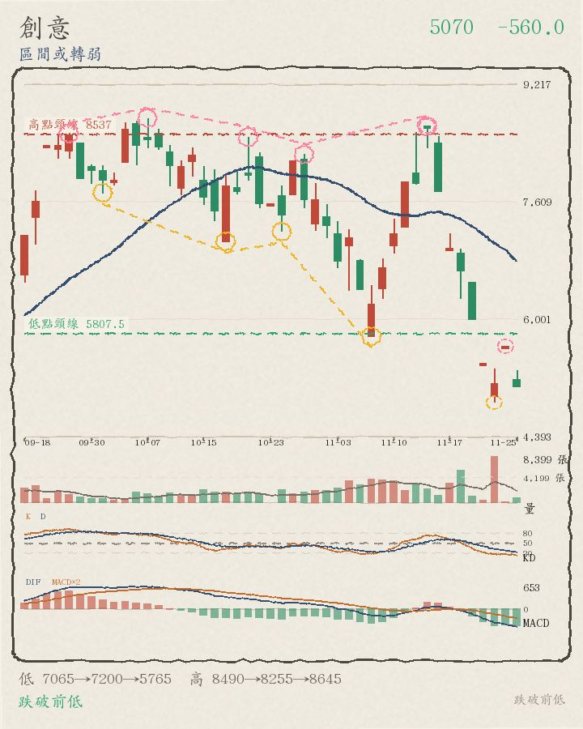
12:31 盤中 5070（-9.95%），比加權指數弱 4.98 個百分點、跌破月線 6951，離高點頸線 8537 還差 40.6%，轉折還沒走出明顯方向。
- 月線位置：現價 5070 在月線 6951 之下（-27.1%）；5 日線 5763 也在月線之下（短均在下）；月線向下
- 量能：以已過交易時間推估，今天成交量約是 20 日均量的 0.33 倍（量縮），比 20 日均量少很多
- 關鍵價位：已跌破前一個轉折低點；高點頸線 8537 還在現價上方 40.6%；前一交易日高點 5630（低於 9.9%）；今天盤中高點 5300（低於 4.3%）；今天盤中低點 5070（高於 0.0%）
- 轉折結構：低點 7065、7200、5765 與高點 8490、8255、8645 都沒有明顯遞增，屬於區間震盪或轉弱；還沒確認的轉折低點 11-23 4860；還沒確認的轉折高點 11-13 8645、11-24 5630（圖上虛線小圈）
晶豪科 3006 上市
173 -10.5（-5.72%）
區間或轉弱 盤中成交值 38.83 億・全榜第 46 名（上市第 39 名）・相對大盤 -0.75
好條件 0/7：無
不好條件 6/7：跌破前低、今日下跌、相對大盤弱、在月線之下、跌破昨日低點、月線下彎
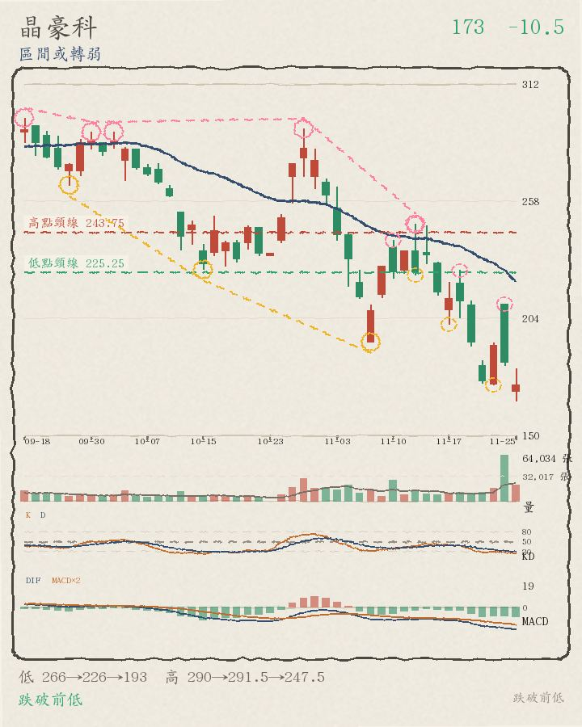
12:31 盤中 173（-5.72%），比加權指數弱 0.75 個百分點、跌破月線 226.15，離高點頸線 243.75 還差 29.0%，轉折還沒走出明顯方向。
- 月線位置：現價 173 在月線 226.15 之下（-23.5%）；5 日線 191 也在月線之下（短均在下）；月線向下
- 量能：以已過交易時間推估，今天成交量約是 20 日均量的 1.93 倍（爆量），比 20 日均量大不少；下跌卻量增，量價背離
- 關鍵價位：已跌破前一個轉折低點；高點頸線 243.75 還在現價上方 29.0%；前一交易日高點 210.5（低於 17.8%）；今天盤中高點 180.5（低於 4.2%）；今天盤中低點 165.5（高於 4.5%）
- 轉折結構：低點 265.5、226.5、193 與高點 290、291.5、247.5 都沒有明顯遞增，屬於區間震盪或轉弱；還沒確認的轉折低點 11-17 201、11-23 173；還沒確認的轉折高點 11-18 226、11-24 210.5（圖上虛線小圈）
友達 2409 上市
24.55 -1.9（-7.36%）
區間或轉弱 盤中成交值 38.2 億・全榜第 47 名（上市第 40 名）・相對大盤 -2.39
好條件 0/7：無
不好條件 5/7：今日下跌、相對大盤弱、在月線之下、跌破昨日低點、月線下彎
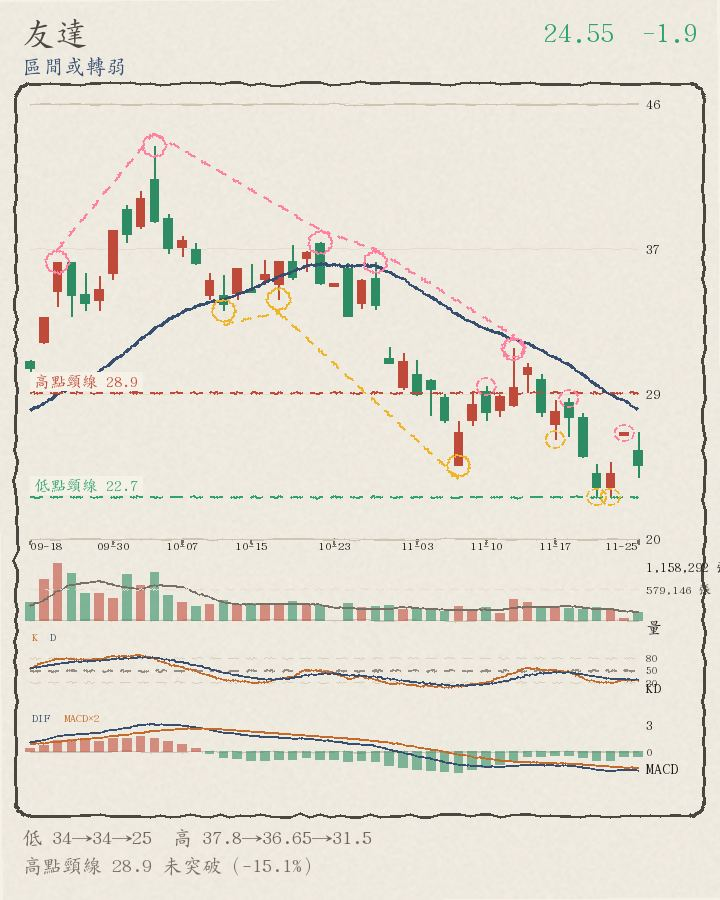
12:31 盤中 24.55（-7.36%），比加權指數弱 2.39 個百分點、跌破月線 28.435，離高點頸線 28.9 還差 15.1%，轉折還沒走出明顯方向。
- 月線位置：現價 24.55 在月線 28.435 之下（-13.7%）；5 日線 25.27 也在月線之下（短均在下）；月線向下
- 量能：以已過交易時間推估，今天成交量約是 20 日均量的 0.79 倍（量平），比 20 日均量少很多
- 關鍵價位：高點頸線 28.9 還沒突破，差 15.1%；前一交易日高點 26.5（低於 7.4%）；今天盤中高點 26.5（低於 7.4%）；今天盤中低點 23.85（高於 2.9%）
- 轉折結構：低點 33.75、34.45、24.55 與高點 37.8、36.65、31.5 都沒有明顯遞增，屬於區間震盪或轉弱；還沒確認的轉折低點 11-20 22.7、11-23 22.7；還沒確認的轉折高點 11-18 28.55、11-24 26.5（圖上虛線小圈）
量平
↑ 回上方清單
環球晶 6488 上櫃
480.5 -25.5（-5.04%）
區間或轉弱 盤中成交值 36.6 億・全榜第 48 名（上櫃第 8 名）・相對大盤 -0.07
好條件 0/7：無
不好條件 6/7：跌破前低、今日下跌、相對大盤弱、在月線之下、跌破昨日低點、月線下彎

12:31 盤中 480.5（-5.04%），比加權指數弱 0.07 個百分點、跌破月線 609.3，離高點頸線 1012.5 還差 52.5%，轉折還沒走出明顯方向。
- 月線位置：現價 480.5 在月線 609.3 之下（-21.1%）；5 日線 488.4 也在月線之下（短均在下）；月線向下
- 量能：以已過交易時間推估，今天成交量約是 20 日均量的 0.85 倍（量平），比 20 日均量少一些
- 關鍵價位：已跌破前一個轉折低點；高點頸線 1012.5 還在現價上方 52.5%；前一交易日高點 506（低於 5.0%）；今天盤中高點 510（低於 5.8%）；今天盤中低點 455.5（高於 5.5%）
- 轉折結構：低點 875、872、508 與高點 1010、1260、663 都沒有明顯遞增，屬於區間震盪或轉弱；還沒確認的轉折低點 11-23 410.5；還沒確認的轉折高點 11-18 577、11-24 506（圖上虛線小圈）
金居 8358 上櫃
247.5 -20.0（-7.48%）
區間或轉弱 盤中成交值 35.95 億・全榜第 49 名（上櫃第 9 名）・相對大盤 -2.51
好條件 0/7：無
不好條件 6/7：跌破前低、今日下跌、相對大盤弱、在月線之下、跌破昨日低點、月線下彎
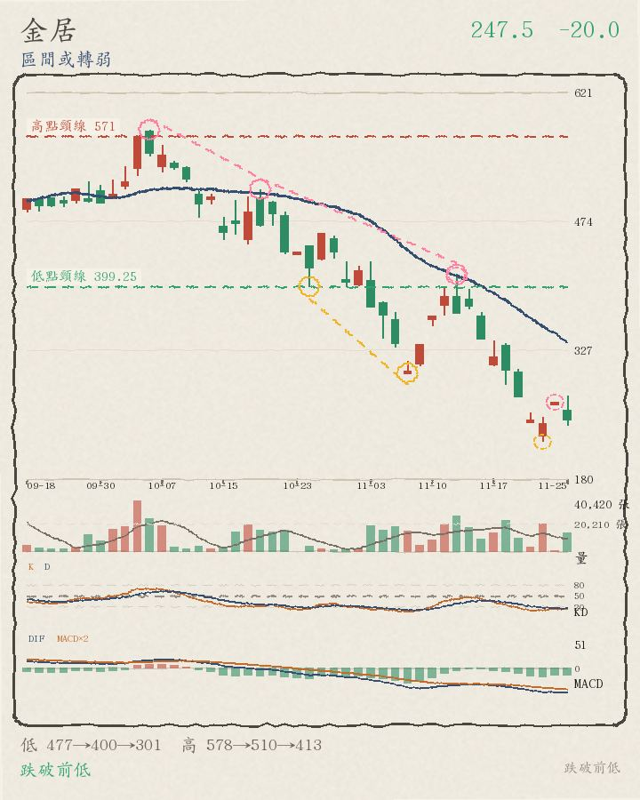
12:31 盤中 247.5（-7.48%），比加權指數弱 2.51 個百分點、跌破月線 346.375，離高點頸線 571 還差 56.7%，轉折還沒走出明顯方向。
- 月線位置：現價 247.5 在月線 346.375 之下（-28.6%）；5 日線 267.2 也在月線之下（短均在下）；月線向下
- 量能：以已過交易時間推估，今天成交量約是 20 日均量的 1.49 倍（量增），比 20 日均量大不少；下跌卻量增，量價背離
- 關鍵價位：已跌破前一個轉折低點；高點頸線 571 還在現價上方 56.7%；前一交易日高點 267.5（低於 7.5%）；今天盤中高點 274.5（低於 9.8%）；今天盤中低點 241（高於 2.7%）
- 轉折結構：低點 477、399.5、301 與高點 578、510、413 都沒有明顯遞增，屬於區間震盪或轉弱；還沒確認的轉折低點 11-23 222.5；還沒確認的轉折高點 11-12 413、11-24 267.5（圖上虛線小圈）
國泰金 2882 上市
100.5 -4.0（-3.83%）
區間或轉弱 盤中成交值 35.64 億・全榜第 50 名（上市第 41 名）・相對大盤 +1.14
好條件 0/7：無
不好條件 5/7：跌破前低、今日下跌、在月線之下、跌破昨日低點、月線下彎
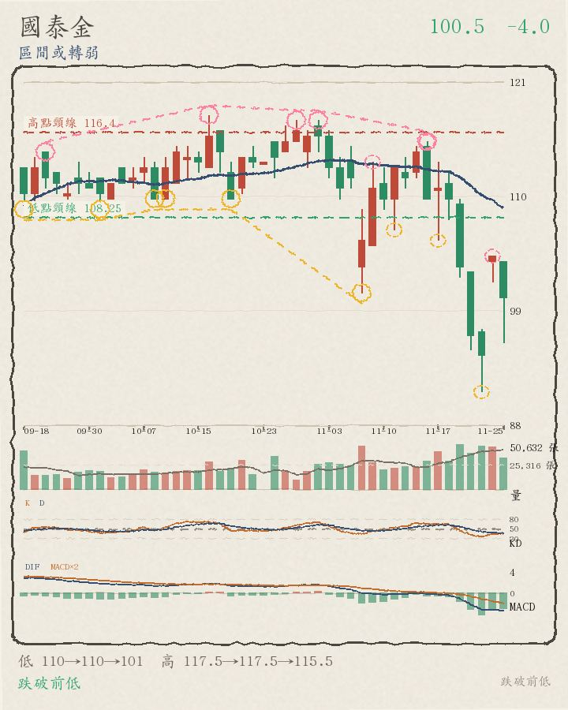
12:31 盤中 100.5（-3.83%），比加權指數強 1.14 個百分點、跌破月線 109.87，離高點頸線 116.4 還差 13.7%，轉折還沒走出明顯方向。
- 月線位置：現價 100.5 在月線 109.87 之下（-8.5%）；5 日線 101.98 也在月線之下（短均在下）；月線向下
- 量能：以已過交易時間推估，今天成交量約是 20 日均量的 1.47 倍（量增），比 20 日均量大不少；下跌卻量增，量價背離
- 關鍵價位：已跌破前一個轉折低點；高點頸線 116.4 還在現價上方 13.7%；前一交易日高點 104.5（低於 3.8%）；今天盤中高點 104（低於 3.4%）；今天盤中低點 96.2（高於 4.5%）
- 轉折結構：低點 110、110、101 與高點 117.5、117.5、115.5 都沒有明顯遞增，屬於區間震盪或轉弱；還沒確認的轉折低點 11-17 106、11-23 91.5；還沒確認的轉折高點 11-16 115.5、11-24 104.5（圖上虛線小圈）
禾伸堂 3026 上市
333.5 -29.5（-8.13%）
區間或轉弱 盤中成交值 35.41 億・全榜第 51 名（上市第 42 名）・相對大盤 -3.16
好條件 0/7：無
不好條件 6/7：跌破前低、今日下跌、相對大盤弱、在月線之下、跌破昨日低點、月線下彎
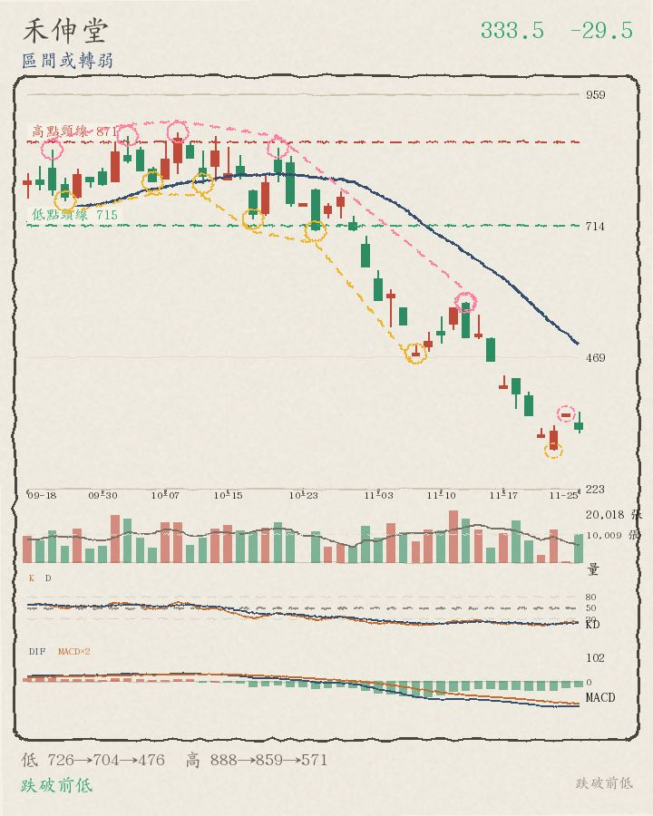
12:31 盤中 333.5（-8.13%），比加權指數弱 3.16 個百分點、跌破月線 513.25，離高點頸線 871 還差 61.7%，轉折還沒走出明顯方向。
- 月線位置：現價 333.5 在月線 513.25 之下（-35.0%）；5 日線 355.3 也在月線之下（短均在下）；月線向下
- 量能：以已過交易時間推估，今天成交量約是 20 日均量的 1.25 倍（量增），比 20 日均量大不少；下跌卻量增，量價背離
- 關鍵價位：已跌破前一個轉折低點；高點頸線 871 還在現價上方 61.7%；前一交易日高點 363（低於 8.1%）；今天盤中高點 367（低於 9.1%）；今天盤中低點 327（高於 2.0%）
- 轉折結構：低點 726、704、475.5 與高點 888、859、571 都沒有明顯遞增，屬於區間震盪或轉弱；還沒確認的轉折低點 11-23 294.5；還沒確認的轉折高點 11-12 571、11-24 363（圖上虛線小圈）
富邦金 2881 上市
132 -11.5（-8.01%）
區間或轉弱 盤中成交值 34.72 億・全榜第 52 名（上市第 43 名）・相對大盤 -3.04
好條件 0/7：無
不好條件 6/7：跌破前低、今日下跌、相對大盤弱、在月線之下、跌破昨日低點、月線下彎
12:31 盤中 132（-8.01%），比加權指數弱 3.04 個百分點、跌破月線 152.625，離高點頸線 164 還差 19.5%，轉折還沒走出明顯方向。
- 月線位置：現價 132 在月線 152.625 之下（-13.5%）；5 日線 141.5 也在月線之下（短均在下）；月線向下
- 量能：以已過交易時間推估，今天成交量約是 20 日均量的 1.37 倍（量增），比 20 日均量大不少；下跌卻量增，量價背離
- 關鍵價位：已跌破前一個轉折低點；高點頸線 164 還在現價上方 19.5%；前一交易日高點 143.5（低於 8.0%）；今天盤中高點 142（低於 7.0%）；今天盤中低點 129.5（高於 1.9%）
- 轉折結構：低點 147.5、153.5、140 與高點 164、164、163.5 都沒有明顯遞增，屬於區間震盪或轉弱；還沒確認的轉折低點 11-17 145、11-23 125；還沒確認的轉折高點 11-13 163.5、11-24 143.5（圖上虛線小圈）
群創 3481 上市
31.05 -2.2（-6.62%）
區間或轉弱 盤中成交值 34.39 億・全榜第 53 名（上市第 44 名）・相對大盤 -1.65
好條件 0/7：無
不好條件 6/7：跌破前低、今日下跌、相對大盤弱、在月線之下、跌破昨日低點、月線下彎
12:31 盤中 31.05（-6.62%），比加權指數弱 1.65 個百分點、跌破月線 38.525，轉折還沒走出明顯方向。
- 月線位置：現價 31.05 在月線 38.525 之下（-19.4%）；5 日線 32.59 也在月線之下（短均在下）；月線向下
- 量能：以已過交易時間推估，今天成交量約是 20 日均量的 0.90 倍（量平），比 20 日均量少一些
- 關鍵價位：前一交易日高點 33.25（低於 6.6%）；今天盤中高點 32.7（低於 5.0%）；今天盤中低點 29.95（高於 3.7%）
- 轉折結構：低點 48.55、45.65、34.2 與高點 56.2、49.7、43.3 都沒有明顯遞增，屬於區間震盪或轉弱；還沒確認的轉折低點 11-12 38.85、11-23 28.95；還沒確認的轉折高點 11-18 37、11-24 33.25（圖上虛線小圈）
華經 2468 上市
65.7 -0.7（-1.05%）
上升趨勢（底底高＋頭頭高） 盤中成交值 33.75 億・全榜第 54 名（上市第 45 名）・相對大盤 +3.92
好條件 5/7：站上月線、月線向上、底底高、頭頭高、突破頸線
不好條件 2/7：今日下跌、跌破昨日低點
12:31 盤中 65.7（-1.05%），比加權指數強 3.92 個百分點、站上月線 63.855，已突破高點頸線 34.6，轉折結構仍是底底高＋頭頭高。
- 月線位置：現價 65.7 在月線 63.855 之上（+2.9%）；5 日線 65.9 也在月線之上（短均在上）；月線向上
- 量能：以已過交易時間推估，今天成交量約是 20 日均量的 1.70 倍（爆量），比 20 日均量大不少；下跌卻量增，量價背離
- 關鍵價位：高點頸線 34.6 已站上；前一交易日高點 71.3（低於 7.9%）；今天盤中高點 72.5（低於 9.4%）；今天盤中低點 63.1（高於 4.1%）
- 轉折結構：低點 40.5、49.6、53.1 一路墊高、高點 34.2、49.45、82.1 也一路墊高，是底底高＋頭頭高；還沒確認的轉折低點 11-20 59.5；還沒確認的轉折高點 11-17 82.1、11-23 74.6（圖上虛線小圈）
波若威 3163 上櫃
357.5 +3.5（+0.99%）
區間或轉弱 盤中成交值 33.56 億・全榜第 55 名（上櫃第 10 名）・相對大盤 +5.96
好條件 1/7：攻擊量（量增＋上漲）
不好條件 3/7：跌破前低、在月線之下、月線下彎
12:31 盤中 357.5（+0.99%），比加權指數強 5.96 個百分點、跌破月線 447.8，離高點頸線 585 還差 38.9%，轉折還沒走出明顯方向。
- 月線位置：現價 357.5 在月線 447.8 之下（-20.2%）；5 日線 364 也在月線之下（短均在下）；月線向下
- 量能：以已過交易時間推估，今天成交量約是 20 日均量的 5.90 倍（爆量），比 20 日均量大不少；上漲又量增，量價配合
- 關鍵價位：已跌破前一個轉折低點；高點頸線 585 還在現價上方 38.9%；前一交易日高點 354（高於 1.0%）；今天盤中高點 389（低於 8.1%）；今天盤中低點 343（高於 4.2%）
- 轉折結構：低點 639、547、387 與高點 595、575、523 都沒有明顯遞增，屬於區間震盪或轉弱；還沒確認的轉折低點 11-23 308；還沒確認的轉折高點 11-13 523、11-24 354（圖上虛線小圈）
兆豐金 2886 上市
50 -5.0（-9.09%）
底部墊高、未過前高 盤中成交值 32.19 億・全榜第 56 名（上市第 46 名）・相對大盤 -4.12
好條件 1/7：底底高
不好條件 6/7：跌破前低、今日下跌、相對大盤弱、在月線之下、跌破昨日低點、月線下彎
12:31 盤中 50（-9.09%），比加權指數弱 4.12 個百分點、跌破月線 53.68，離高點頸線 55.67 還差 10.2%，底部還在墊高（但高點沒同步創高）。
- 月線位置：現價 50 在月線 53.68 之下（-6.9%）；5 日線 52.56 也在月線之下（短均在下）；月線向下
- 量能：以已過交易時間推估，今天成交量約是 20 日均量的 2.55 倍（爆量），比 20 日均量大不少；下跌卻量增，量價背離
- 關鍵價位：已跌破前一個轉折低點；高點頸線 55.67 還在現價上方 10.2%；前一交易日高點 55（低於 9.1%）；今天盤中高點 53.7（低於 6.9%）；今天盤中低點 49.5（高於 1.0%）
- 轉折結構：低點 48.35、49、50.4 墊高（底底高），但高點 56、56、56.5 沒有同步創高；還沒確認的轉折低點 11-18 52、11-23 49.65；還沒確認的轉折高點 11-19 56.5、11-24 55（圖上虛線小圈）
華通 2313 上市
154.5 -15.0（-8.85%）
區間或轉弱 盤中成交值 30.13 億・全榜第 57 名（上市第 47 名）・相對大盤 -3.88
好條件 0/7：無
不好條件 6/7：今日下跌、相對大盤弱、在月線之下、貼近今日低點（1% 內）、跌破昨日低點、月線下彎

12:31 盤中 154.5（-8.85%），比加權指數弱 3.88 個百分點、跌破月線 184.95，離高點頸線 263.5 還差 41.4%，轉折還沒走出明顯方向。
- 月線位置：現價 154.5 在月線 184.95 之下（-16.5%）；5 日線 166.6 也在月線之下（短均在下）；月線向下
- 量能：以已過交易時間推估，今天成交量約是 20 日均量的 0.82 倍（量平），比 20 日均量少很多
- 關鍵價位：高點頸線 263.5 還沒突破，差 41.4%；前一交易日高點 169.5（低於 8.8%）；今天盤中高點 169（低於 8.6%）；今天盤中低點 153（高於 1.0%）
- 轉折結構：低點 219、228、149 與高點 261、266、215.5 都沒有明顯遞增，屬於區間震盪或轉弱；還沒確認的轉折低點 11-18 168.5、11-23 139.5；還沒確認的轉折高點 11-18 194.5、11-24 169.5（圖上虛線小圈）
量平
↑ 回上方清單
健鼎 3044 上市
460.5 -26.0（-5.34%）
區間或轉弱 盤中成交值 29.8 億・全榜第 58 名（上市第 48 名）・相對大盤 -0.37
好條件 0/7：無
不好條件 5/7：今日下跌、相對大盤弱、在月線之下、跌破昨日低點、月線下彎
12:31 盤中 460.5（-5.34%），比加權指數弱 0.37 個百分點、跌破月線 480.6，離高點頸線 484 還差 4.9%，轉折還沒走出明顯方向。
- 月線位置：現價 460.5 在月線 480.6 之下（-4.2%）；5 日線 449.3 也在月線之下（短均在下）；月線向下
- 量能：以已過交易時間推估，今天成交量約是 20 日均量的 1.70 倍（爆量），比 20 日均量大不少；下跌卻量增，量價背離
- 關鍵價位：高點頸線 484 還沒突破，差 4.9%；前一交易日高點 486.5（低於 5.3%）；今天盤中高點 479（低於 3.9%）；今天盤中低點 438（高於 5.1%）
- 轉折結構：低點 554、554、395 與高點 597、563、582 都沒有明顯遞增，屬於區間震盪或轉弱；還沒確認的轉折低點 11-18 430、11-23 397.5；還沒確認的轉折高點 11-18 481.5、11-24 486.5（圖上虛線小圈）
光寶科 2301 上市
192 -12.0（-5.88%）
區間或轉弱 盤中成交值 28.73 億・全榜第 59 名（上市第 49 名）・相對大盤 -0.91
好條件 0/7：無
不好條件 5/7：今日下跌、相對大盤弱、在月線之下、跌破昨日低點、月線下彎
12:31 盤中 192（-5.88%），比加權指數弱 0.91 個百分點、跌破月線 219.85，離高點頸線 241.25 還差 20.4%，轉折還沒走出明顯方向。
- 月線位置：現價 192 在月線 219.85 之下（-12.7%）；5 日線 193.3 也在月線之下（短均在下）；月線向下
- 量能：以已過交易時間推估，今天成交量約是 20 日均量的 1.11 倍（量增），比 20 日均量大一些；下跌卻量增，量價背離
- 關鍵價位：高點頸線 241.25 還沒突破，差 20.4%；前一交易日高點 204（低於 5.9%）；今天盤中高點 205（低於 6.3%）；今天盤中低點 184（高於 4.3%）
- 轉折結構：低點 278、254、190.5 與高點 299.5、304.5、243.5 都沒有明顯遞增，屬於區間震盪或轉弱；還沒確認的轉折低點 11-12 227.5、11-23 169.5；還沒確認的轉折高點 11-18 215、11-24 204（圖上虛線小圈）
量增
↑ 回上方清單
中信金 2891 上市
65.4 -4.5（-6.44%）
區間或轉弱 盤中成交值 28.46 億・全榜第 60 名（上市第 50 名）・相對大盤 -1.47
好條件 0/7：無
不好條件 6/7：跌破前低、今日下跌、相對大盤弱、在月線之下、跌破昨日低點、月線下彎
12:31 盤中 65.4（-6.44%），比加權指數弱 1.47 個百分點、跌破月線 73.845，離高點頸線 76.2 還差 14.2%，轉折還沒走出明顯方向。
- 月線位置：現價 65.4 在月線 73.845 之下（-11.4%）；5 日線 69.64 也在月線之下（短均在下）；月線向下
- 量能：以已過交易時間推估，今天成交量約是 20 日均量的 1.04 倍（量平），跟 20 日均量差不多
- 關鍵價位：已跌破前一個轉折低點；高點頸線 76.2 還在現價上方 14.2%；前一交易日高點 70.1（低於 6.7%）；今天盤中高點 68.4（低於 4.4%）；今天盤中低點 63.5（高於 3.0%）
- 轉折結構：低點 67.3、73.8、67.5 與高點 76.4、76.2、80.6 都沒有明顯遞增，屬於區間震盪或轉弱；還沒確認的轉折低點 11-11 72.6、11-23 61.5；還沒確認的轉折高點 11-16 80.6、11-24 70.1（圖上虛線小圈）
華星光 4979 上櫃
266.5 -14.0（-4.99%）
區間或轉弱 盤中成交值 28.34 億・全榜第 61 名（上櫃第 11 名）・相對大盤 -0.02
好條件 0/7：無
不好條件 6/7：跌破前低、今日下跌、相對大盤弱、在月線之下、跌破昨日低點、月線下彎
12:31 盤中 266.5（-4.99%），比加權指數弱 0.02 個百分點、跌破月線 361.4，轉折還沒走出明顯方向。
- 月線位置：現價 266.5 在月線 361.4 之下（-26.3%）；5 日線 285 也在月線之下（短均在下）；月線向下
- 量能：以已過交易時間推估，今天成交量約是 20 日均量的 2.36 倍（爆量），比 20 日均量大不少；下跌卻量增，量價背離
- 關鍵價位：前一交易日高點 280.5（低於 5.0%）；今天盤中高點 299（低於 10.9%）；今天盤中低點 253（高於 5.3%）
- 轉折結構：低點 545、445、312 與高點 588、531、410.5 都沒有明顯遞增，屬於區間震盪或轉弱；還沒確認的轉折低點 11-23 239.5；還沒確認的轉折高點 11-18 340.5、11-24 280.5（圖上虛線小圈）
精材 3374 上櫃
336 -37.0（-9.92%）
區間或轉弱 盤中成交值 25.82 億・全榜第 62 名（上櫃第 12 名）・相對大盤 -4.95
好條件 0/7：無
不好條件 6/7：跌破前低、今日下跌、相對大盤弱、在月線之下、跌破昨日低點、月線下彎
12:31 盤中 336（-9.92%），比加權指數弱 4.95 個百分點、跌破月線 427.85，離高點頸線 520.67 還差 35.5%，轉折還沒走出明顯方向。
- 月線位置：現價 336 在月線 427.85 之下（-21.5%）；5 日線 356.2 也在月線之下（短均在下）；月線向下
- 量能：以已過交易時間推估，今天成交量約是 20 日均量的 0.64 倍（量縮），比 20 日均量少很多
- 關鍵價位：已跌破前一個轉折低點；高點頸線 520.67 還在現價上方 35.5%；前一交易日高點 373（低於 9.9%）；今天盤中高點 368.5（低於 8.8%）；今天盤中低點 336（高於 0.0%）
- 轉折結構：低點 436.5、399、362.5 與高點 530、513、519 都沒有明顯遞增，屬於區間震盪或轉弱；還沒確認的轉折低點 11-23 291.5；還沒確認的轉折高點 11-13 519、11-24 373（圖上虛線小圈）
力旺 3529 上櫃
1885 -140.0（-6.91%）
區間或轉弱 盤中成交值 24.84 億・全榜第 63 名（上櫃第 13 名）・相對大盤 -1.94
好條件 0/7：無
不好條件 5/7：今日下跌、相對大盤弱、在月線之下、跌破昨日低點、月線下彎
12:31 盤中 1885（-6.91%），比加權指數弱 1.94 個百分點、跌破月線 2180.5，離高點頸線 2315 還差 18.6%，轉折還沒走出明顯方向。
- 月線位置：現價 1885 在月線 2180.5 之下（-13.6%）；5 日線 1986 也在月線之下（短均在下）；月線向下
- 量能：以已過交易時間推估，今天成交量約是 20 日均量的 1.62 倍（爆量），比 20 日均量大不少；下跌卻量增，量價背離
- 關鍵價位：高點頸線 2315 還沒突破，差 18.6%；前一交易日高點 2080（低於 9.4%）；今天盤中高點 2030（低於 7.1%）；今天盤中低點 1825（高於 3.3%）
- 轉折結構：低點 2530、2470、1825 與高點 3635、2675、2425 都沒有明顯遞增，屬於區間震盪或轉弱；還沒確認的轉折低點 11-23 1705；還沒確認的轉折高點 11-18 2315、11-24 2080（圖上虛線小圈）
頎邦 6147 上櫃
125 -10.0（-7.41%）
區間或轉弱 盤中成交值 19.26 億・全榜第 64 名（上櫃第 14 名）・相對大盤 -2.44
好條件 0/7：無
不好條件 6/7：跌破前低、今日下跌、相對大盤弱、在月線之下、跌破昨日低點、月線下彎
12:31 盤中 125（-7.41%），比加權指數弱 2.44 個百分點、跌破月線 161.9，離高點頸線 220 還差 43.2%，轉折還沒走出明顯方向。
- 月線位置：現價 125 在月線 161.9 之下（-22.8%）；5 日線 129 也在月線之下（短均在下）；月線向下
- 量能：以已過交易時間推估，今天成交量約是 20 日均量的 0.92 倍（量平），比 20 日均量少一些
- 關鍵價位：已跌破前一個轉折低點；高點頸線 220 還在現價上方 43.2%；前一交易日高點 135（低於 7.4%）；今天盤中高點 136.5（低於 8.4%）；今天盤中低點 121.5（高於 2.9%）
- 轉折結構：低點 211、194.5、142 與高點 217、223、180 都沒有明顯遞增，屬於區間震盪或轉弱；還沒確認的轉折低點 11-23 108.5；還沒確認的轉折高點 11-12 180、11-24 135（圖上虛線小圈）
世界 5347 上櫃
116.5 -4.5（-3.72%）
區間或轉弱 盤中成交值 17.48 億・全榜第 65 名（上櫃第 15 名）・相對大盤 +1.25
好條件 0/7：無
不好條件 4/7：今日下跌、在月線之下、跌破昨日低點、月線下彎
12:31 盤中 116.5（-3.72%），比加權指數強 1.25 個百分點、跌破月線 131.425，離高點頸線 141.5 還差 17.7%，轉折還沒走出明顯方向。
- 月線位置：現價 116.5 在月線 131.425 之下（-11.4%）；5 日線 115.6 也在月線之下（短均在下）；月線向下
- 量能：以已過交易時間推估，今天成交量約是 20 日均量的 1.25 倍（量增），比 20 日均量大不少；下跌卻量增，量價背離
- 關鍵價位：高點頸線 141.5 還沒突破，差 17.7%；前一交易日高點 121（低於 3.7%）；今天盤中高點 119.5（低於 2.5%）；今天盤中低點 109（高於 6.9%）
- 轉折結構：低點 152.5、159、113.5 與高點 170、170、142 都沒有明顯遞增，屬於區間震盪或轉弱；還沒確認的轉折低點 11-17 117、11-23 102.5；還沒確認的轉折高點 11-18 128、11-24 121（圖上虛線小圈）
量增
↑ 回上方清單
宜鼎 5289 上櫃
768 -85.0（-9.96%）
區間或轉弱 盤中成交值 16.33 億・全榜第 66 名（上櫃第 16 名）・相對大盤 -4.99
好條件 0/7：無
不好條件 6/7：跌破前低、今日下跌、相對大盤弱、在月線之下、跌破昨日低點、月線下彎
12:31 盤中 768（-9.96%），比加權指數弱 4.99 個百分點、跌破月線 946.35，離高點頸線 866 還差 11.3%，轉折還沒走出明顯方向。
- 月線位置：現價 768 在月線 946.35 之下（-18.9%）；5 日線 788.6 也在月線之下（短均在下）；月線向下
- 量能：以已過交易時間推估，今天成交量約是 20 日均量的 1.23 倍（量增），比 20 日均量大不少；下跌卻量增，量價背離
- 關鍵價位：已跌破前一個轉折低點；高點頸線 866 還在現價上方 11.3%；前一交易日高點 853（低於 10.0%）；今天盤中高點 826（低於 7.0%）；今天盤中低點 768（高於 0.0%）
- 轉折結構：低點 1065、1065、851 與高點 1375、1205、1025 都沒有明顯遞增，屬於區間震盪或轉弱；還沒確認的轉折低點 11-17 780、11-20 695；還沒確認的轉折高點 11-18 879、11-24 853（圖上虛線小圈）
天品 6199 上櫃
172.5 -0.5（-0.29%）
高點墊高、底部不穩 盤中成交值 16.2 億・全榜第 67 名（上櫃第 17 名）・相對大盤 +4.68
好條件 5/7：站上月線、月線向上、頭頭高、突破頸線、守住今日高檔（距今日高點 1% 內）
不好條件 2/7：今日下跌、貼近今日低點（1% 內）
12:31 盤中 172.5（-0.29%），比加權指數強 4.68 個百分點、站上月線 166.7，已突破高點頸線 171.75，高點還在墊高（但底部沒同步墊高）。
- 月線位置：現價 172.5 在月線 166.7 之上（+3.5%）；5 日線 171.8 也在月線之上（短均在上）；月線向上
- 量能：以已過交易時間推估，今天成交量約是 20 日均量的 1.25 倍（量增），比 20 日均量大不少；下跌卻量增，量價背離
- 關鍵價位：高點頸線 171.75 已站上；前一交易日高點 174（低於 0.9%）；今天盤中高點 173.5（低於 0.6%）；今天盤中低點 171（高於 0.9%）
- 轉折結構：高點 153.5、150、171 墊高（頭頭高），但低點 134.5、134.5、156 沒有同步墊高；還沒確認的轉折低點 11-17 168.5、11-20 168；還沒確認的轉折高點 11-19 172.5、11-24 174（圖上虛線小圈）
萬潤 6187 上櫃
700 -40.0（-5.41%）
區間或轉弱 盤中成交值 16 億・全榜第 68 名（上櫃第 18 名）・相對大盤 -0.44
好條件 0/7：無
不好條件 6/7：跌破前低、今日下跌、相對大盤弱、在月線之下、跌破昨日低點、月線下彎
12:31 盤中 700（-5.41%），比加權指數弱 0.44 個百分點、跌破月線 949.25，轉折還沒走出明顯方向。
- 月線位置：現價 700 在月線 949.25 之下（-26.3%）；5 日線 700.6 也在月線之下（短均在下）；月線向下
- 量能：以已過交易時間推估，今天成交量約是 20 日均量的 1.31 倍（量增），比 20 日均量大不少；下跌卻量增，量價背離
- 關鍵價位：前一交易日高點 740（低於 5.4%）；今天盤中高點 775（低於 9.7%）；今天盤中低點 666（高於 5.1%）
- 轉折結構：低點 1180、1180、864 與高點 1680、1360、1060 都沒有明顯遞增，屬於區間震盪或轉弱；還沒確認的轉折低點 11-23 576；還沒確認的轉折高點 11-12 1060、11-24 740（圖上虛線小圈）
威剛 3260 上櫃
247.5 -23.5（-8.67%）
區間或轉弱 盤中成交值 15.44 億・全榜第 69 名（上櫃第 19 名）・相對大盤 -3.70
好條件 0/7：無
不好條件 6/7：跌破前低、今日下跌、相對大盤弱、在月線之下、跌破昨日低點、月線下彎
12:31 盤中 247.5（-8.67%），比加權指數弱 3.70 個百分點、跌破月線 299.725，離高點頸線 319.75 還差 22.6%，轉折還沒走出明顯方向。
- 月線位置：現價 247.5 在月線 299.725 之下（-17.4%）；5 日線 257 也在月線之下（短均在下）；月線向下
- 量能：以已過交易時間推估，今天成交量約是 20 日均量的 1.03 倍（量平），跟 20 日均量差不多
- 關鍵價位：已跌破前一個轉折低點；高點頸線 319.75 還在現價上方 22.6%；前一交易日高點 274（低於 9.7%）；今天盤中高點 254.5（低於 2.8%）；今天盤中低點 244（高於 1.4%）
- 轉折結構：低點 328、328、270 與高點 385.5、378.5、323 都沒有明顯遞增，屬於區間震盪或轉弱；還沒確認的轉折低點 11-17 263、11-23 230.5；還沒確認的轉折高點 11-18 288、11-24 274（圖上虛線小圈）
精測 6510 上櫃
2290 -190.0（-7.66%）
區間或轉弱 盤中成交值 15.11 億・全榜第 70 名（上櫃第 20 名）・相對大盤 -2.69
好條件 0/7：無
不好條件 5/7：今日下跌、相對大盤弱、在月線之下、跌破昨日低點、月線下彎
12:31 盤中 2290（-7.66%），比加權指數弱 2.69 個百分點、跌破月線 2761.5，離高點頸線 3542.5 還差 35.4%，轉折還沒走出明顯方向。
- 月線位置：現價 2290 在月線 2761.5 之下（-17.1%）；5 日線 2528 也在月線之下（短均在下）；月線向下
- 量能：以已過交易時間推估，今天成交量約是 20 日均量的 1.09 倍（量平），比 20 日均量大一些
- 關鍵價位：高點頸線 3542.5 還沒突破，差 35.4%；前一交易日高點 2480（低於 7.7%）；今天盤中高點 2580（低於 11.2%）；今天盤中低點 2235（高於 2.5%）
- 轉折結構：低點 3000、2825、2250 與高點 3580、3345、3505 都沒有明顯遞增，屬於區間震盪或轉弱；還沒確認的轉折低點 11-18 2625、11-23 2130；還沒確認的轉折高點 11-18 2990、11-24 2480（圖上虛線小圈）
量平
↑ 回上方清單
← 回股市觀察